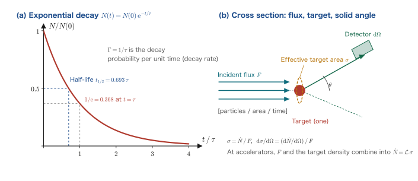
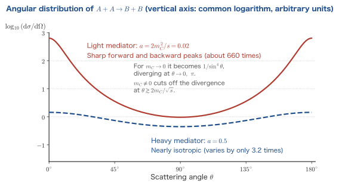
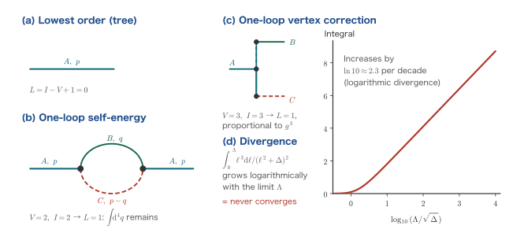
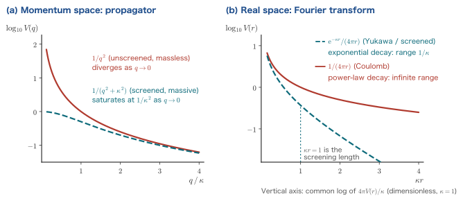
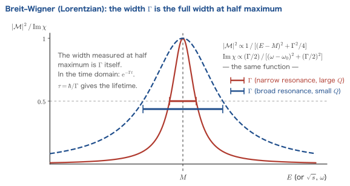

Chapter 8The Feynman Rules — Decay Rates and Scattering Cross Sections
In the seven chapters so far, we have learned the names of the elementary particles, lined up the four forces, counted the conservation laws, acquired the language of symmetry, and seen how bound states are built. Yet we have not once produced a number. We could say “this particle decays like so,” but not “how many seconds it takes to decay.” We could say “these two particles collide,” but not “with what probability they collide.”
This chapter fills that gap. Particle physics stands as an experimental science because theory predicts two numbers, the decay rate $\Gamma$ and the scattering cross section $\sigma$, and experiments measure them. The path from theory to those numbers has been organized into a remarkably mechanical procedure. That procedure is the Feynman rules.
The procedure has three stages. The first stage is kinematics: how much “room” is available for each possible final state (phase space). The second stage is dynamics: the invariant amplitude $\mathcal{M}$, in which all the details of the interaction are concentrated. The third stage is normalization: the density of the incoming stream of the initial state (the flux). Multiplying these three together gives
$$ \Gamma\ \ \text{or}\ \ \sigma \;=\; \frac{1}{(\text{flux})} \times \int \abs{\mathcal{M}}^2 \times (\text{phase space}) $$which we call the golden rule. Readers who have studied materials science should already recognize this structure: “the square of a matrix element times a density of states” is exactly Fermi’s golden rule. In fact the two are the same formula; the only differences are the content of the matrix element and the shape of the box in which the states are counted. We verify this correspondence by explicit formulas in Section 8.7.
In the second half of this chapter, following Griffiths, we introduce a fictitious theory called the ABC toy model. It is a toy theory with three kinds of scalar particles $A$, $B$, $C$ and just one coupling constant $g$. It has no spin, no polarization, and no color charge. Yet there is no better teaching material, because we can walk the entire path from the Feynman rules to a numerical value without cutting a single corner. We obtain the lifetime of $A$ in seconds and the cross section of $A+A\to B+B$ in femtobarns. Only after doing so does it become clear what the Dirac spinors and $\gamma$ matrices of Chapter 9 and beyond are tools for computing.
- The decay rate $\Gamma$ and the lifetime $\tau=1/\Gamma$, partial widths and branching ratios, and the composition law for several channels $\Gamma_{\text{tot}}=\sum_i\Gamma_i$
- The definition of the scattering cross section $\sigma$, as an extension of the geometric cross section, and the differential cross section $\dd\sigma/\dd\Omega$
- The origin of the unit barn, and the practical task of obtaining the number of events $N=\mathcal{L}_{\text{int}}\sigma$ from the luminosity $\mathcal{L}$
- The conventions of relativistic normalization: where the factor $2E$ comes from, and why $\dd^3p/[(2\pi)^3 2E]$ is an invariant measure
- Reading the golden rule for decays and the golden rule for scattering as a decomposition into three pieces: phase space, the invariant amplitude $\mathcal{M}$, and the flux factor
- Derivation of the two-body decay formula $\Gamma=S\abs{\pp}\abs{\mathcal{M}}^2/(8\pi m_1^2)$ and the two-body scattering formula $\dd\sigma/\dd\Omega=S\abs{\mathcal{M}}^2\abs{\pp_f}/(64\pi^2 s\abs{\pp_i})$ ($S$ is the statistical factor for identical particles)
- The Feynman rules of the ABC toy model (vertex $-\ii g$, propagator $\ii/(q^2-m^2)$, external line $1$)
- Obtaining the lifetime of $A\to B+C$ and the cross section of $A+A\to B+B$ entirely on your own, down to the final number
- The appearance of loop diagrams, divergences, Feynman parameters, and why “renormalization” becomes necessary (a bridge to Chapter 10)
- Which tools of materials science are identical to the golden rule, phase space, the propagator, and the resonance
8.1 Decay and Scattering — The Two Numbers Experimentalists Measure
What can be done in a particle-physics experiment comes down to just two kinds of things. Either make a particle and wait for it to decay, or collide particles and see what comes out. The former measures the decay rate $\Gamma$; the latter measures the cross section $\sigma$. The theorist’s job is, in the end, to predict these two numbers. First, let us make the definitions of these two quantities precise.
8.1.1 Decay rate and lifetime
It is not determined when an unstable particle will decay. All that is determined is the probability of decaying per unit time. We write this probability as the decay rate $\Gamma$.
Definition: Decay rate $\Gamma$ and lifetime $\tau$
We write the probability that an unstable particle at rest decays during a small time $\dd t$ as $\Gamma\,\dd t$. We call $\Gamma$ the decay rate, or the decay width.
If we prepare $N$ identical particles, the number lost during $\dd t$ is $\dd N = -\Gamma N\,\dd t$. Integrating, we obtain
$$ \begin{equation} N(t) = N(0)\,\ee^{-\Gamma t} \label{eq:8-expdecay} \end{equation} $$The time it takes for the number to fall to $1/\ee$ of its initial value is called the lifetime $\tau$. Therefore
Here $\hbar = 6.582\times10^{-22}\ \mathrm{MeV\,s}$. Since $\Gamma$ has the dimension of energy, it is customary to express it in MeV or GeV. It is called a “width” because, as we will see in Section 8.7, the spread of the mass distribution of an unstable particle (the full width at half maximum of the Breit–Wigner distribution) is exactly $\Gamma$.
Caution: Lifetime and half-life are different
The half-life $t_{1/2}$ used in radiochemistry is the time for the number to be halved. Setting $N/N(0)=1/2$ in Eq. \eqref{eq:8-expdecay}, we obtain
$$ t_{1/2} = \frac{\ln 2}{\Gamma} = \tau\,\ln 2 = 0.693\,\tau $$In particle physics one always uses $\tau$ (the mean lifetime), while in nuclear engineering and radiation management one uses $t_{1/2}$. When particle physicists and reactor engineers read tables for the same nuclide, their values differ by a factor of $0.693$, so when discussing the activation of a material, always check which convention is being used.
8.1.2 Partial widths, branching ratios, and multiple channels
Most particles do not decay in only one way. The $\tau$ lepton decays into an electron, into a muon, and into hadrons. Each way of decaying is called a decay channel (also called a decay mode).
Definition: Partial width and branching ratio
The decay rate when only channel $i$ is considered is called the partial width $\Gamma_i$. Since the channels occur independently of one another, the probability of decay per unit time simply adds:
The fraction of decays that proceed through channel $i$ is called the branching ratio (also called the branching fraction), and we write
$$ \begin{equation} \mathrm{BR}_i \equiv \frac{\Gamma_i}{\Gamma_{\text{tot}}}, \qquad \sum_i \mathrm{BR}_i = 1 \label{eq:8-br} \end{equation} $$What experiments can measure directly are $\Gamma_{\text{tot}}$ (= the lifetime) and $\mathrm{BR}_i$ (= the counting of final states), whereas what theory computes is $\Gamma_i$. The two are connected by $\Gamma_i = \mathrm{BR}_i\times\Gamma_{\text{tot}}$.
Why do rates add but lifetimes do not?
Eq. \eqref{eq:8-gamma-tot} looks obvious, but it is easy to get wrong. Written in terms of lifetimes, it reads
$$ \frac{1}{\tau} = \frac{1}{\tau_1} + \frac{1}{\tau_2} + \cdots $$so lifetimes combine like resistors in parallel. If even one channel is fast, the overall lifetime is dragged down and becomes short.
This has exactly the same structure as Matthiessen’s rule, familiar in materials science. In the electrical resistance of a metal, the relaxation times for impurity scattering, phonon scattering, and defect scattering combine as
$$ \frac{1}{\tau_{\text{tot}}} = \frac{1}{\tau_{\text{imp}}} + \frac{1}{\tau_{\text{ph}}} + \frac{1}{\tau_{\text{def}}} $$because scattering rates (= scattering probabilities per unit time) add. The same holds for the luminescence of an excited state: the luminescence lifetime is a combination of radiative and nonradiative processes, $1/\tau = 1/\tau_{\text{r}} + 1/\tau_{\text{nr}}$, and the quantum efficiency $\eta = \tau/\tau_{\text{r}} = \Gamma_{\text{r}}/\Gamma_{\text{tot}}$ is precisely a branching ratio. The internal quantum efficiency of a phosphor and $\mathrm{BR}(\tau\to\mu\bar\nu\nu)$ of the tau lepton are merely different names for the same kind of quantity.
| Particle | Mass | $\Gamma_{\text{tot}}$ or $\tau$ | Main channels and branching ratios |
|---|---|---|---|
| $\mu^-$ | $105.658\ \mathrm{MeV}$ | $\tau=2.197\times10^{-6}\ \mathrm{s}$ | $e^-\bar\nu_e\nu_\mu$ almost $100\%$ |
| $\pi^+$ | $139.570\ \mathrm{MeV}$ | $\tau=2.603\times10^{-8}\ \mathrm{s}$ | $\mu^+\nu_\mu$ $99.99\%$, $e^+\nu_e$ $1.23\times10^{-4}$ |
| $\pi^0$ | $134.977\ \mathrm{MeV}$ | $\tau=8.43\times10^{-17}\ \mathrm{s}$ | $\gamma\gamma$ $98.82\%$, $e^+e^-\gamma$ $1.17\%$ |
| $K_S^0$ | $497.611\ \mathrm{MeV}$ | $\tau=8.95\times10^{-11}\ \mathrm{s}$ | $\pi^+\pi^-$ $69.20\%$, $\pi^0\pi^0$ $30.69\%$ |
| $\tau^-$ | $1776.86\ \mathrm{MeV}$ | $\tau=2.903\times10^{-13}\ \mathrm{s}$ | hadrons $64.8\%$, $e^-\bar\nu_e\nu_\tau$ $17.82\%$, $\mu^-\bar\nu_\mu\nu_\tau$ $17.39\%$ |
| $\rho^0$ | $775.26\ \mathrm{MeV}$ | $\Gamma=149.1\ \mathrm{MeV}$ | $\pi^+\pi^-$ almost $100\%$ |
| $J/\psi$ | $3096.90\ \mathrm{MeV}$ | $\Gamma=92.6\ \mathrm{keV}$ | hadrons $87.7\%$, $e^+e^-$ $5.97\%$, $\mu^+\mu^-$ $5.96\%$ |
| $Z^0$ | $91.188\ \mathrm{GeV}$ | $\Gamma=2.4952\ \mathrm{GeV}$ | hadrons $69.91\%$, invisible ($\nu\bar\nu$) $20.00\%$, $\ell^+\ell^-$ $3.36$–$3.37\%$ each ($3.363\%$ for $e^+e^-$) |
| $H^0$ | $125.25\ \mathrm{GeV}$ | $\Gamma\approx 4.1\ \mathrm{MeV}$ (theoretical value) | $b\bar b$ $58\%$, $WW^*$ $21\%$, $gg$ $8.2\%$, $\gamma\gamma$ $0.23\%$ (the branching ratios are also theoretical values) |
Note how $\Gamma$ and $\tau$ are used differently in Table 8.1. For particles such as the $\rho^0$ and $Z^0$, whose lifetimes are too short to leave a track, we measure $\Gamma$ as the width of the mass distribution. For particles such as the $B^0$ and $K_S^0$, which travel a visible distance inside the detector, we measure $\tau$ from the displacement of the decay point (the length of the track). For still longer-lived particles such as the $\mu^-$ and $\pi^+$, we bring them to rest and measure $\tau$ from the distribution of decay times (the muon lifetime $2.197\ \mu\mathrm{s}$ has been determined by this method to a precision of $10^{-6}$). A width can be resolved directly only if it is broader than the detector resolution, $\Gamma\gtrsim1\ \mathrm{MeV}$ or so, and tracks can be used only when $c\tau$ is several tens of $\mu\mathrm{m}$ or more, that is, $\tau\gtrsim10^{-13}\ \mathrm{s}$ or so. In between (the $10^{-17}\ \mathrm{s}$ of the $\pi^0$ and the $92.6\ \mathrm{keV}$ of the $J/\psi$), neither method can be used, and the values are determined by indirect methods such as the Primakoff effect, energy scans, and combinations of partial widths and branching ratios.
8.1.3 Cross section — from geometry to probability
The word “cross section” originally means, quite literally, the “area of a target.” When point particles of zero radius are fired at random at a hard sphere of radius $R$, the probability of a hit is proportional to the cross-sectional area of the target, $\pi R^2$. The scattering cross section is the generalization of this.
Definition: Total cross section and differential cross section
Let $F$ be the flux of incident particles (the number of particles passing per unit area per unit time). If $\dot{N}$ is the number of reactions per unit time per target, the total cross section $\sigma$ is defined by
Since $[\dot N]=$ time$^{-1}$ and $[F]=$ area$^{-1}\cdot$time$^{-1}$, $\sigma$ has the dimension of area. This is the origin of the name “cross section.”
Counting only the scattered particles that enter the solid angle $\dd\Omega$ around a particular direction $(\theta,\varphi)$ gives the differential cross section:
$$ \begin{equation} \frac{\dd\sigma}{\dd\Omega}(\theta,\varphi) \equiv \frac{1}{F}\frac{\dd\dot N}{\dd\Omega}, \qquad \sigma = \int \frac{\dd\sigma}{\dd\Omega}\,\dd\Omega = \int_0^{2\pi}\!\!\dd\varphi \int_0^\pi \frac{\dd\sigma}{\dd\Omega}\sin\theta\,\dd\theta \label{eq:8-dsigma-def} \end{equation} $$Counting only a specific final state (for example, $e^+e^-\to\mu^+\mu^-$) gives a partial cross section, which plays the same role as the partial width of a decay.
Physical Meaning: A cross section is an “effective target size”
That a cross section has the dimension of area does not mean that the particle really has a disk of that size. $\sigma$ is a quantity that restates the probability of this reaction as “the radius the partner would have if it were a hard disk.”
This is why cross sections change by many orders of magnitude with the incident energy, and why each type of reaction has a different value. The absorption cross section of $^{157}\mathrm{Gd}$ for thermal neutrons is as large as $2.54\times10^{5}\ \mathrm{barn}$, but this does not mean that the Gd nucleus actually has a radius as large as $\sqrt{\sigma/\pi}\approx2800\ \mathrm{fm}$ (more than 400 times the actual nuclear radius $r_0A^{1/3}\approx6.5\ \mathrm{fm}$). It is merely that the reaction probability is abnormally high because of a resonance (Section 8.7.4).
Conversely, an example of an extraordinarily small cross section is the neutrino, which has only $\sigma\sim10^{-44}\ \mathrm{cm^2}=10^{-20}\ \mathrm{barn}$ or so in the $\mathrm{MeV}$ region. This is why solar neutrinos pass straight through the Earth.
8.1.4 The barn — a unit “as big as a barn”
Definition: The barn
With prefixes, we use mb (millibarn, $10^{-3}$ b), $\mu$b, nb, pb, and fb (femtobarn, $10^{-15}$ b). The conversion from natural units is
$$ 1\ \mathrm{GeV^{-2}} = 0.3894\ \mathrm{mbarn} \qquad\text{(from }(\hbar c)^2 = 0.3894\ \mathrm{GeV^2\,mbarn}\text{)} $$In practice, the usual approach is to do all calculations in $\mathrm{GeV^{-2}}$ and multiply by this number at the end to convert to barns.
Sidebar: Why a “barn”?
“Barn” is the English word for a farm building used to store hay and grain. According to the usual account, during the Manhattan Project in the Second World War, when researchers found that the cross sections of heavy nuclei such as the uranium nucleus were about $10^{-24}\ \mathrm{cm^2}$, they said it was “as big as a barn,” and that is the origin of the word.
Let us actually estimate it. The radius of a nucleus is $R = r_0 A^{1/3}$ ($r_0=1.2\ \mathrm{fm}$). For $^{238}\mathrm{U}$, $A^{1/3}=6.20$, so $R = 7.44\ \mathrm{fm}$, and the geometric cross section is
$$ \pi R^2 = \pi\times(7.44)^2\ \mathrm{fm^2} = 174\ \mathrm{fm^2} = 1.74\ \mathrm{barn} $$Indeed, “one barn” serves as a measure of the size of a uranium nucleus. It is a rare example of a joke-like unit, coined as a code word, that simply took hold internationally.
Connection to Materials Science: Neutron cross sections govern materials selection
The biggest setting in which the concept of a cross section bears directly on materials science is the selection of materials for nuclear reactors and fusion reactors. Listing the absorption cross sections for thermal neutrons ($0.0253\ \mathrm{eV}$) gives
| Nuclide | $\sigma_a$ [barn] | Role |
|---|---|---|
| $^{157}\mathrm{Gd}$ | $2.54\times10^{5}$ | burnable poison and control material (larger by orders of magnitude) |
| $^{113}\mathrm{Cd}$ | $2.06\times10^{4}$ | control rod |
| $^{10}\mathrm{B}$ | $3.84\times10^{3}$ | control rod, neutron shielding, BNCT |
| $^{56}\mathrm{Fe}$ | $2.6$ | structural material (steel) |
| $^{90}\mathrm{Zr}$ | $0.011$ | fuel cladding (Zircaloy) |
| $^{12}\mathrm{C}$ | $0.0035$ | moderator (graphite) |
Table 8.2 gives values per nuclide, so to compare them as materials we must average over the natural isotopic composition. Natural Zr has $\sigma_a\approx0.19\ \mathrm{barn}$, more than an order of magnitude larger than the $0.011\ \mathrm{barn}$ of $^{90}\mathrm{Zr}$, the main component listed in the table ($^{91}\mathrm{Zr}$, with an abundance of $11\%$, has $1.24\ \mathrm{barn}$ and pushes the average up). Natural Fe has $2.56\ \mathrm{barn}$.
Zircaloy is chosen for fuel cladding not only for its mechanical properties and corrosion resistance but also because its $\sigma_a$ is only about $1/13$ that of iron. The neutron economy of the reactor core cannot be sustained unless the material avoids wasting neutrons. Isotope-enriched Zr with $^{91}\mathrm{Zr}$ removed is being studied precisely because one wants to bring this $0.19$ closer to $0.011$. Conversely, Gd and B are added deliberately so that they absorb neutrons.
On the fusion side, the cross section of the D–T reaction $\mathrm{D}+\mathrm{T}\to{}^4\mathrm{He}+n$ has a peak of $\sigma\approx 5\ \mathrm{barn}$ at a center-of-mass energy of about $64\ \mathrm{keV}$ (due to the resonance of $^5\mathrm{He}$). The reaction-rate coefficient $\braket{\sigma v}$ appearing in the Lawson criterion is this cross section averaged over a Maxwell distribution, and at $T=10\ \mathrm{keV}$ it is $\braket{\sigma v}\approx1.1\times10^{-22}\ \mathrm{m^3/s}$. “Whether a reactor can be built” hinges on the single number $\sigma$ defined in this chapter.
8.1.5 Luminosity and the number of events
In accelerator experiments, the flux and the target density are combined into a single quantity called the luminosity.
Definition: Luminosity $\mathcal{L}$ and integrated luminosity
The number of reactions per unit time, $\dot N$, can be written as
We call the quantity $\mathcal{L}$, defined so that this holds, the (instantaneous) luminosity. Its dimension is area$^{-1}\cdot$time$^{-1}$, and it is usually expressed in $\mathrm{cm^{-2}s^{-1}}$. Its integral over the running time,
$$ \mathcal{L}_{\text{int}} = \int \mathcal{L}\,\dd t \qquad\Longrightarrow\qquad N = \mathcal{L}_{\text{int}}\,\sigma $$is called the integrated luminosity and is expressed in $\mathrm{fb^{-1}}$ (inverse femtobarns). If $\sigma$ is written in fb, the number of events follows simply by multiplication.
When two bunches collide head-on, suppose that bunches containing $n_1$ and $n_2$ particles overlap, at frequency $f$, over a cross-sectional area $4\pi\sigma_x\sigma_y$. Then
$$ \mathcal{L} = f\,\frac{n_1 n_2}{4\pi\sigma_x\sigma_y} $$(here $\sigma_x,\sigma_y$ are the transverse standard deviations of the beam; note that these symbols have nothing to do with the cross section $\sigma$).
Worked Example 8.1: How many Higgs bosons were produced at the LHC?
The peak luminosity reached by the LHC ($\sqrt{s}=13\ \mathrm{TeV}$) in Run 2 was $\mathcal{L}=2\times10^{34}\ \mathrm{cm^{-2}s^{-1}}$ (about twice the design value of $1\times10^{34}\ \mathrm{cm^{-2}s^{-1}}$), and the total cross section for Higgs production is $\sigma_H\approx 55\ \mathrm{pb}$. On the other hand, the proton–proton inelastic scattering cross section is $\sigma_{\text{inel}}\approx 79\ \mathrm{mb}$.
(1) Number of Higgs bosons produced per second. Since $55\ \mathrm{pb} = 55\times10^{-12}\ \mathrm{barn} = 5.5\times10^{-35}\ \mathrm{cm^2}$,
$$ \dot N_H = 2\times10^{34}\times5.5\times10^{-35} = 1.1\ \mathrm{s^{-1}} $$This means that roughly one Higgs boson is produced per second.
(2) Number of proton collisions per second. Since $79\ \mathrm{mb} = 7.9\times10^{-26}\ \mathrm{cm^2}$,
$$ \dot N_{\text{inel}} = 2\times10^{34}\times7.9\times10^{-26} = 1.6\times10^{9}\ \mathrm{s^{-1}} $$(3) Ratio. $1.1/(1.6\times10^{9}) = 7\times10^{-10}$. Taking the reciprocal, $1/(7\times10^{-10}) = 1.4\times10^{9}$; that is, a Higgs boson is produced in only about one out of 1.4 billion collisions. This shows how demanding the work of the trigger and data-acquisition systems is.
(4) Total number over all of Run 2 ($\mathcal{L}_{\text{int}}=140\ \mathrm{fb^{-1}}$). Since $55\ \mathrm{pb}=5.5\times10^{4}\ \mathrm{fb}$,
$$ N_H = 5.5\times10^{4}\ \mathrm{fb}\times140\ \mathrm{fb^{-1}} = 7.7\times10^{6} $$About 7.7 million Higgs bosons were produced. Of these, the fraction decaying to $\gamma\gamma$ is the branching ratio $0.23\%$, giving about $1.8\times10^4$ events, and then the detection efficiency and the subtraction of background events must still be taken into account. This is why the discovery in 2012 was so hard. At that time only about $10\ \mathrm{fb^{-1}}$ had been accumulated at 7+8 TeV; the signal in the $\gamma\gamma$ channel was an excess of a few hundred events sitting on a continuum background of the order of $10^4$ events, and in the $ZZ^*\to4\ell$ channel each experiment had only a dozen or so events. ∎

8.1.6 A feel for the sizes of cross sections
Cross sections span 25 orders of magnitude, from $10^{-20}$ barn to $10^{5}$ barn. Let us line up a few representative values to build some intuition.
| Process | Typical cross section | Force responsible |
|---|---|---|
| $^{157}\mathrm{Gd}(n,\gamma)$ (thermal neutrons) | $2.5\times10^{5}\ \mathrm{barn}$ | Strong force (resonance) |
| $\mathrm{D}+\mathrm{T}\to{}^4\mathrm{He}+n$ ($64\ \mathrm{keV}$) | $5\ \mathrm{barn}$ | Strong force (resonance) |
| $pp$ total cross section ($\sqrt{s}=13\ \mathrm{TeV}$) | $110\ \mathrm{mb}$ | Strong force |
| $e^+e^-\to\mu^+\mu^-$ ($\sqrt{s}=10\ \mathrm{GeV}$) | $0.87\ \mathrm{nb}$ | Electromagnetic force |
| $pp\to H+X$ ($\sqrt{s}=13\ \mathrm{TeV}$) | $55\ \mathrm{pb}$ | Strong force + Higgs coupling |
| $\nu_e + n \to e^- + p$ ($\mathrm{MeV}$ region) | $\sim10^{-20}\ \mathrm{barn}$ | Weak force |
The cross section for $e^+e^-\to\mu^+\mu^-$ is derived from QED in Chapter 10 as
$$ \begin{equation} \sigma(e^+e^-\to\mu^+\mu^-) = \frac{4\pi\alpha^2}{3s} = \frac{86.9\ \mathrm{nb}}{s\,[\mathrm{GeV^2}]} \label{eq:8-mumu} \end{equation} $$(the numerator is the constant $4\pi\alpha^2/3$ converted to $\mathrm{nb\,GeV^2}$; more precisely it is $86.86$). The fall-off as $1/s$ with increasing energy is characteristic of a process that exchanges a single massless mediator particle (the photon).
An example that can be contrasted with this $1/s$ law is $A+A\to B+B$ in the ABC model, which we will work out ourselves in Section 8.5 of this chapter. There the coupling constant $g$ has the dimension of mass, so the cross section falls as $\sigma\propto1/s^2$. Where the deviation from $1/s$ comes from becomes clear if one reads the result of Section 8.5 alongside the dimensional argument of Section 8.3.1.
8.2 The Golden Rule
Now that we have defined $\Gamma$ and $\sigma$, we next write down the formulas that compute them from the theory. To state the conclusion first, both have the form
$$ (\text{rate}) = \frac{1}{(\text{flux factor})} \times \int \abs{\mathcal{M}}^2\ (\text{phase space}) $$We call this formula the golden rule. Let us look at its three parts in turn.
8.2.1 Relativistic normalization — where does the $2E$ factor come from?
First, let us dispose of the most confusing convention. A factor of $2E$ appears everywhere in the formulas of field theory. It is not handed down from above; it arises necessarily from the relativistically natural way of counting states.
Why is counting “one particle” not good enough?
In nonrelativistic quantum mechanics, the wave function is normalized as $\int\abs{\psi}^2\dd^3x = 1$. This is the counting convention “one particle in the box.”
However, this way of counting is broken by Lorentz transformations. For an observer moving with velocity $v$, the box is Lorentz-contracted and its volume becomes $1/\gamma$ times as large. The number of particles inside does not change, so the number density becomes $\gamma$ times as large. In other words, the convention “one particle per unit volume” would mean different things in different inertial frames.
Therefore, in field theory one includes in advance a factor proportional to $\gamma = E/m$ and normalizes to “$2E$ particles per unit volume.” Then the number density transforms under Lorentz transformations in the same way as the norm of the field, and the same formulas can be used in any inertial frame. The coefficient $2$ is a historical choice that comes out naturally from the formula for the $\delta$ function (the next derivation).
Derivation: The invariant momentum-integration measure $\dd^3p/[(2\pi)^3 2E]$
Step 1: Write the mass-shell condition with a $\delta$ function. A real (on-shell) particle satisfies $p^2 = p_\mu p^\mu = m^2$. To impose this condition on an integral over four-momentum space, it suffices to insert $\delta(p^2-m^2)$. In addition, we require the energy to be positive by means of $\theta(p^0)$, and consider
$$ \int \dd^4 p\ \delta(p^2-m^2)\,\theta(p^0) $$Here $\dd^4p$ is Lorentz invariant, $p^2-m^2$ is a scalar, and $\theta(p^0)$ is invariant (since a proper, orthochronous Lorentz transformation carries positive energy to positive energy). A transformation that is proper but not orthochronous, such as $PT$, changes the sign of $p^0$, so what matters here is the “orthochronous” property. Hence the integral as a whole is Lorentz invariant.
Step 2: Carry out the $p^0$ integral. We have $p^2 - m^2 = (p^0)^2 - \abs{\pp}^2 - m^2$. Setting $E_{\pp}\equiv\sqrt{\abs{\pp}^2+m^2}$, we apply the composition formula for the $\delta$ function (Appendix A)
$$ \delta\big(f(x)\big) = \sum_i \frac{\delta(x-x_i)}{\abs{f'(x_i)}} \qquad (f(x_i)=0) $$to $f(p^0) = (p^0)^2 - E_{\pp}^2$. The zeros are $p^0=\pm E_{\pp}$ and the derivative is $f'=2p^0$, so
$$ \delta(p^2-m^2) = \frac{\delta(p^0-E_{\pp})}{2E_{\pp}} + \frac{\delta(p^0+E_{\pp})}{2E_{\pp}} $$The $\theta(p^0)$ kills the second term. Therefore
Since the left-hand side is invariant, $\dd^3p/(2E_{\pp})$ on the right-hand side is also a Lorentz-invariant measure. $\dd^3p$ by itself is not invariant: under a boost it transforms as $\dd^3p'=(E'/E)\,\dd^3p$ (seen from the rest frame, it is stretched by a factor of $\gamma$; note that this is the opposite direction from the Lorentz contraction in position space). On the other hand, $1/(2E')$ is multiplied by $1/\gamma$, so the product cancels exactly.
Step 3: Attach $(2\pi)^3$. To match the convention in which momentum eigenstates are normalized in field quantization as $[a_{\pp},a^\dagger_{\pp'}]=(2\pi)^3 2E_{\pp}\,\delta^3(\pp-\pp')$, the counting of final states is done with the measure
The $(2\pi)^{-3}\dd^3p$ part is exactly the familiar “density of states in $k$-space, $V\dd^3k/(2\pi)^3$” of solid-state physics (Section 8.7.2). ∎
Caution: The dimension of $\abs{\mathcal{M}}^2$ differs from process to process
With relativistic normalization, the dimension of the invariant amplitude $\mathcal{M}$ changes from process to process. For a process with $n$ external lines,
$$ [\mathcal{M}] = (\text{mass})^{4-n} $$For a $1\to2$ decay ($n=3$), $[\mathcal{M}]=$ mass$^1$, and for a $2\to2$ scattering ($n=4$), $[\mathcal{M}]=$ mass$^0$ (dimensionless). If you keep track of dimensions in the course of a calculation, you can catch a mix-up of coefficients with fairly high probability. We will check this explicitly in Sections 8.4 and 8.5.
8.2.2 The golden rule for decay
Theorem: The golden rule for decay ($1\to n$)
When a particle of mass $m_1$ at rest decays into $n-1$ particles (four-momenta $p_2,\dots,p_n$), the decay rate is
Here $S$ is the statistical factor: for each set of $k$ identical particles in the final state, one multiplies by $1/k!$ (so as not to count the same state more than once).
Physical Meaning: The roles of the three components
Let us read Eq. \eqref{eq:8-golden-decay} by breaking it into its components.
- $1/(2m_1)$: the normalization factor of the initial state. Since the parent particle is at rest, $E_1=m_1$, and this is nothing but $1/(2E_1)$. The heavier the particle, the more it is “diluted,” so for the same amplitude the decay rate goes down.
- $\abs{\mathcal{M}}^2$: all of the dynamics is packed in here. Coupling constants, propagators, and spin structure are all contents of $\mathcal{M}$, and this is the only thing the Feynman rules compute.
- $(2\pi)^4\delta^4(\cdots)\prod\dd^3p_j/[(2\pi)^32E_j]$: the phase space. It counts “how much room” the final state has to spread out. The more ways there are to choose the final-state momenta without violating energy conservation, the faster the decay.
This three-part decomposition is essential. If we change only the final-state masses while $\mathcal{M}$ stays the same, then the decay rate is determined only by the size of the phase space ($\abs{\pp}$)—in Exercise 8.4(3), $\Gamma$ drops to one fifth from the phase space alone, without changing the amplitude at all. The reason a decay is slow is either that the force is weak or that the phase space is small; there is no third possibility.
However, when $\mathcal{M}$ itself depends on the mass, that effect must be taken into account. The fact that, between $\pi^0\to\gamma\gamma$ ($\Gamma=7.8\ \mathrm{eV}$) and $\eta\to\gamma\gamma$ ($\Gamma=0.52\ \mathrm{keV}$), the $\eta$ decays nearly 70 times faster is not due to the phase space. The phase-space factor for two massless particles is $\abs{\pp}/(8\pi m^2)=1/(16\pi m)$, which decreases with the parent mass, so from the phase space alone the $\eta$ should be slower than the $\pi^0$. What actually matters is that the anomaly-induced amplitude grows as $\mathcal{M}\propto\alpha m^2/f$, which gives $\Gamma\propto m^3$. The value $(m_\eta/m_{\pi^0})^3=(547.9/135.0)^3=66.9$ reproduces well the measured ratio $0.516\ \mathrm{keV}/7.8\ \mathrm{eV}=66$ (the chiral anomaly in Section 13.6.3 of Chapter 13). Telling which of the three components is moving is what it means to read $\Gamma$.
Caution: The golden rule applies only in the rest frame (and time dilation)
The $1/(2m_1)$ in Eq. \eqref{eq:8-golden-decay} uses the fact that the parent particle is at rest. The decay rate of a moving particle drops to $\Gamma/\gamma$ ($\gamma=E_1/m_1$). That is, the lifetime measured in the laboratory is $\gamma\tau$.
This is extremely important experimentally; for example, it is thanks to this effect that a muon with $\tau=2.197\ \mu\mathrm{s}$ can reach the ground even when it is born at an altitude of $15\ \mathrm{km}$. The $c\tau$ of the muon is $c\tau = 2.998\times10^{8}\ \mathrm{m/s}\times2.197\times10^{-6}\ \mathrm{s} = 659\ \mathrm{m}$, so for $\gamma=20$ the mean flight distance in the laboratory frame is $\gamma c\tau = 20\times659\ \mathrm{m}\approx 13\ \mathrm{km}$, and the muon can survive a considerable fraction of the $15\ \mathrm{km}$ path. In general, the reason that the particle tables list the flight distance expressed as $c\tau$ ($c\tau=7.80\ \mathrm{m}$ for $\pi^\pm$, $2.68\ \mathrm{cm}$ for $K_S^0$, $455\ \mu\mathrm{m}$ for $B^0$) is that multiplying by $\gamma$ immediately gives the track length.
8.2.3 The golden rule for scattering and the flux factor
Theorem: The golden rule for scattering ($2\to n$)
When two particles of four-momenta $p_1$, $p_2$ collide and become $n-2$ particles, the cross section is
The denominator $4\sqrt{(p_1\cdot p_2)^2-(m_1m_2)^2}$ is called the flux factor. It is the part corresponding to the $2m_1$ in the golden rule for decay.
Derivation: The flux factor becomes $4\abs{\pp_i}\sqrt{s}$ in the CM frame
We will use this result in Section 8.2.6, so let us show it first. In the CM frame, $p_1=(E_1,\pp_i)$ and $p_2=(E_2,-\pp_i)$.
Step 1: Write the inner product. With the metric $g^{\mu\nu}=\mathrm{diag}(1,-1,-1,-1)$,
$$ p_1\cdot p_2 = E_1E_2 - \pp_i\cdot(-\pp_i) = E_1E_2 + \abs{\pp_i}^2 $$Step 2: Square and subtract the mass terms. Use $m_1^2=E_1^2-\abs{\pp_i}^2$ and $m_2^2=E_2^2-\abs{\pp_i}^2$. Abbreviating $P\equiv\abs{\pp_i}^2$, we have
$$ (p_1\cdot p_2)^2 - m_1^2m_2^2 = (E_1E_2+P)^2 - (E_1^2-P)(E_2^2-P) $$Expand. The first term is $E_1^2E_2^2 + 2E_1E_2 P + P^2$, and the second is $E_1^2E_2^2 - E_1^2 P - E_2^2 P + P^2$. In the difference, $E_1^2E_2^2$ and $P^2$ cancel, leaving
$$ = 2E_1E_2P + E_1^2 P + E_2^2 P = P\,(E_1+E_2)^2 $$Step 3: Introduce $s$. In the CM frame, $(E_1+E_2)^2 = s$ (the square of the total energy equals the Mandelstam $s$), so
Therefore the flux factor is $4\abs{\pp_i}\sqrt{s}$. ∎
Incidentally, the left-hand side is a Lorentz-invariant combination, so the same formula can be used in fixed-target experiments ($p_2$ at rest). In that case $p_1\cdot p_2 = E_1 m_2$, so $\sqrt{(E_1m_2)^2 - m_1^2m_2^2} = m_2\abs{\pp_1}$, and the flux factor is $4m_2\abs{\pp_1}$.
8.2.4 Two-body phase space
The case used most frequently in actual calculations is that of a two-particle final state. This phase-space integral can be carried out analytically.
Derivation: Two-body phase space $\Phi_2 = \abs{\pp_f}/(4\pi\sqrt{s})$
We compute, in the CM frame ($\bm{P}=0$), the case in which the total four-momentum $P$ ($P^2=s$) splits into two particles (masses $m_3$, $m_4$).
Step 1: Definition.
$$ \Phi_2 \equiv \int (2\pi)^4\delta^4(P-p_3-p_4)\, \frac{\dd^3p_3}{(2\pi)^3 2E_3}\frac{\dd^3p_4}{(2\pi)^3 2E_4} $$Step 2: Eliminate the $\pp_4$ integral with the spatial-component $\delta$ function. $\delta^3(\pp_3+\pp_4)$ forces $\pp_4=-\pp_3$. The only $\delta$ function left is the one for energy. Writing $\pp\equiv\pp_3$,
$$ \Phi_2 = \frac{(2\pi)^4}{(2\pi)^6}\int \frac{\dd^3 p}{4E_3E_4}\, \delta(\sqrt{s}-E_3-E_4) = \frac{1}{4\pi^2}\int \dd\Omega\int_0^\infty \frac{\abs{\pp}^2\,\dd\abs{\pp}}{4E_3E_4}\, \delta(\sqrt{s}-E_3-E_4) $$Here we used $\dd^3p = \abs{\pp}^2\dd\abs{\pp}\,\dd\Omega$, and $E_3=\sqrt{\abs{\pp}^2+m_3^2}$, $E_4=\sqrt{\abs{\pp}^2+m_4^2}$.
Step 3: Eliminate the $\abs{\pp}$ integral with the remaining $\delta$ function. The derivative of $f(\abs{\pp}) \equiv \sqrt{s}-E_3-E_4$ is
$$ \frac{\dd f}{\dd\abs{\pp}} = -\frac{\abs{\pp}}{E_3}-\frac{\abs{\pp}}{E_4} = -\abs{\pp}\,\frac{E_3+E_4}{E_3E_4} = -\frac{\abs{\pp}\sqrt{s}}{E_3E_4} $$(in the last step we used $E_3+E_4=\sqrt{s}$). By the composition formula for the $\delta$ function, the $\abs{\pp}$ integral equals the value at the root $\abs{\pp}=\abs{\pp_f}$ multiplied by $E_3E_4/(\abs{\pp_f}\sqrt{s})$:
$$ \Phi_2 = \frac{1}{4\pi^2}\int\dd\Omega\ \frac{\abs{\pp_f}^2}{4E_3E_4}\cdot\frac{E_3E_4}{\abs{\pp_f}\sqrt{s}} = \frac{1}{16\pi^2}\int\dd\Omega\ \frac{\abs{\pp_f}}{\sqrt{s}} $$Step 4: Angular integration. Since $\abs{\pp_f}$ does not depend on the angle, we simply multiply by $\int\dd\Omega=4\pi$ to get
∎
Definition: The two-body final-state momentum (Källén function)
When a system of invariant mass $\sqrt{s}$ splits into two particles of masses $m_3$, $m_4$, the magnitude of the momentum of each particle in the CM frame is
We call $\lambda$ the Källén function (also called the triangle function). The name comes from the fact that it has the same form as the combination appearing in the area formula (Heron’s formula) when $x,y,z$ are regarded as the squares of the three side lengths of a triangle. The factored form
$$ \begin{equation} \abs{\pp_f} = \frac{1}{2\sqrt{s}}\sqrt{\big[s-(m_3+m_4)^2\big]\big[s-(m_3-m_4)^2\big]} \label{eq:8-pf-factored} \end{equation} $$is more convenient for calculation. One sees at a glance that it vanishes at $\sqrt{s}=m_3+m_4$ (the threshold). For $m_3=m_4=m$ it simplifies to $\abs{\pp_f}=\frac{1}{2}\sqrt{s-4m^2}$, and for $m_4=0$ to $\abs{\pp_f}=(s-m_3^2)/(2\sqrt{s})$.
8.2.5 The two-body decay formula
Derivation: $\Gamma = S\abs{\pp}\abs{\mathcal{M}}^2/(8\pi m_1^2)$
Step 1: Substitute the two-body phase space into the golden rule. In a decay the parent is at rest, so $\sqrt{s}=m_1$. Eq. \eqref{eq:8-golden-decay} becomes
$$ \Gamma = \frac{S}{2m_1}\int \abs{\mathcal{M}}^2\ \dd\Phi_2 = \frac{S}{2m_1}\int \abs{\mathcal{M}}^2\ \frac{\abs{\pp}}{16\pi^2 m_1}\,\dd\Omega $$Step 2: The case where $\abs{\mathcal{M}}^2$ does not depend on the angle. For the two-body decay of a scalar particle (or after taking the spin average), $\abs{\mathcal{M}}^2$ is a constant, so it suffices to multiply by $\int\dd\Omega=4\pi$:
$$ \Gamma = \frac{S}{2m_1}\cdot\abs{\mathcal{M}}^2\cdot\frac{\abs{\pp}}{16\pi^2 m_1}\cdot 4\pi $$Step 3: Simplify. Since $4\pi/(2\times16\pi^2) = 1/(8\pi)$,
∎
Dimensional check. $[\Gamma]=$ mass. The right-hand side is $[\abs{\pp}][\mathcal{M}]^2/[m_1^2] = $ mass$\cdot[\mathcal{M}]^2/$mass$^2$. Hence we must have $[\mathcal{M}]=$ mass$^1$. This agrees with the result of putting $n=3$ into the general rule $[\mathcal{M}]=$ mass$^{4-n}$ of Section 8.2.1.
8.2.6 The CM-frame formula for two-body scattering
Derivation: $\dd\sigma/\dd\Omega = S\abs{\mathcal{M}}^2\abs{\pp_f}/(64\pi^2 s\abs{\pp_i})$
Step 1: Substitute the flux factor and the two-body phase space into the golden rule. Into Eq. \eqref{eq:8-golden-scatt} we insert the flux $4\abs{\pp_i}\sqrt{s}$ from Eq. \eqref{eq:8-flux-cm} and $\dd\Phi_2/\dd\Omega$ from Eq. \eqref{eq:8-phi2}:
$$ \frac{\dd\sigma}{\dd\Omega} = \frac{S}{4\abs{\pp_i}\sqrt{s}}\ \abs{\mathcal{M}}^2\ \frac{\dd\Phi_2}{\dd\Omega} = \frac{S}{4\abs{\pp_i}\sqrt{s}}\ \abs{\mathcal{M}}^2\ \frac{1}{16\pi^2}\frac{\abs{\pp_f}}{\sqrt{s}} $$Step 2: Simplify. Since $\sqrt{s}\times\sqrt{s}=s$ and $4\times16\pi^2 = 64\pi^2$,
∎
Dimensional check. $[\dd\sigma/\dd\Omega]=$ mass$^{-2}$. The right-hand side is $[\mathcal{M}]^2/s\times(\abs{\pp_f}/\abs{\pp_i})$, and since $\abs{\pp_f}/\abs{\pp_i}$ is dimensionless, it is $[\mathcal{M}]^2/$mass$^2$. Hence $[\mathcal{M}]=$ mass$^0$ (dimensionless). This agrees with $n=4$ in the general rule.
The case of elastic scattering. If $m_3=m_1$ and $m_4=m_2$, then $\abs{\pp_f}=\abs{\pp_i}$ and the ratio factor is $1$. In the inelastic case, $\abs{\pp_f}\to0$ just above threshold, so the cross section rises from zero. We call the shape of this rise ($\propto\abs{\pp_f}$) phase-space suppression.
Physical Meaning: Why $1/s$?
Eq. \eqref{eq:8-scatt2body} contains $1/s$ explicitly. If the amplitude $\mathcal{M}$ is independent of the energy (a dimensionless constant), the cross section automatically falls as $\sigma\propto 1/s$. This is a purely kinematic effect and has nothing to do with the details of the interaction.
This is why $\sigma(e^+e^-\to\mu^+\mu^-)=4\pi\alpha^2/(3s)$ in Eq. \eqref{eq:8-mumu} falls as $1/s$; it is a direct consequence of the fact that the QED amplitude settles down to a dimensionless constant $\sim\alpha$ at high energies. Conversely, if a cross section falls faster than $1/s$, a mass scale is present (the appearance of $m_C$ in $A+A\to B+B$ in Section 8.5 is an example). If it falls more slowly than $1/s$ (that is, rises), something is about to break (the story of Chapter 12 is that the four-point interaction of the weak interaction violates unitarity through $\sigma\propto G_F^2 s$, which required the existence of the $W$ boson).
8.3 The ABC Toy Model
From here on, we actually calculate. If we started right away with QED, two technical walls, Dirac spinors (Chapter 9) and polarization sums (Chapter 10), would rise up at the same time and hide the very thing we care about, the “flow of the Feynman rules.” So, following Griffiths, we begin with a toy from which all the walls have been removed.
8.3.1 Setup of the model
Definition: The ABC model
Suppose there are three kinds of particles $A$, $B$, and $C$. Each of them is
- spin 0 (a scalar). Since there is no polarization degree of freedom, neither a spin sum nor a spin average is needed.
- distinct from the others, with masses $m_A$, $m_B$, and $m_C$. We assume $m_A > m_B + m_C$ (so that $A$ can decay).
- its own antiparticle (a real scalar field). Therefore we need not worry about distinguishing particles from antiparticles, and there is no need to put direction arrows on the lines.
There is only one kind of interaction: a three-pronged junction (vertex) where one each of $A$, $B$, and $C$ meet. In the language of field theory, the interaction Lagrangian is
$$ \begin{equation} \Lag_{\text{int}} = -g\,\phi_A\phi_B\phi_C \label{eq:8-abc-lagrangian} \end{equation} $$and $g$ is the only coupling constant.
Why study such a model?
The ABC model does not exist in nature. Nevertheless, for the following three reasons, there is no better model with which to start.
- Zero technical obstacles. No spinors, no $\gamma$ matrices, no polarization vectors, and no color factors appear. All external-line factors are $1$. Therefore we can see completely what is happening at each stage of the calculation.
- The structure is the same as the real thing. The skeleton of vertex factors, propagators, momentum conservation, loop integrals, and divergences is exactly the same in QED and in QCD. What we do in Chapters 10 and 11 is nothing more than putting “flesh” on this skeleton.
- There are settings close to real physics. The coupling of the $\pi$ meson to the nucleon studied by Yukawa (Chapters 3 and 7) has almost exactly this form if we ignore the spin. The three-point self-coupling $\lambda v h^3$ of the Higgs boson also has effectively this form.
Math Note: Dimension of the coupling constant $g$
In natural units, the action $S=\int\Lag\,\dd^4x$ is dimensionless, so $[\Lag]=$ mass$^4$. The kinetic term $\partial_\mu\phi\partial^\mu\phi$ of the scalar field fixes $[\phi]=$ mass$^1$. Therefore, from Eq. \eqref{eq:8-abc-lagrangian},
$$ [g] = [\Lag] - 3[\phi] = 4 - 3 = 1 \qquad\Longrightarrow\qquad [g] = \text{mass}^1 $$$g$ is not dimensionless but has the dimension of momentum (= mass). This is a decisive difference from $e=\sqrt{4\pi\alpha}$ (dimensionless) in QED. In the ABC model, the “condition for perturbation theory to work” is not that $g$ is small but that the dimensionless ratio $g/\sqrt{s}$ or $g/m_A$ is small. In the numerical example of Section 8.4 we take the setting $g/m_A = 0.1$.
An interaction whose coupling constant has a positive mass dimension in this way is called super-renormalizable. The divergences are very mild, and this is the reason why, as we will see in Section 8.6, a loop needs only one logarithmic divergence.
Math Note: Quantization of the harmonic oscillator — what does the field $\phi$ create and annihilate?
The $\phi_A$ in Eq. \eqref{eq:8-abc-lagrangian} is not a wave function of quantum mechanics but a quantized field. This book does not carry out field quantization systematically, but here we set down just the skeleton needed to read off the meaning of the Feynman rules. The key point is just one—a free field is a collection of independent harmonic oscillators.
Step 1: Decompose the field into modes. Expand a free real scalar field in a box of side $L$ (volume $V=L^3$, periodic boundary conditions) in plane waves. The coefficient $q_\kk(t)$ of each wave vector $\kk$ obeys the equation of motion $\ddot q_\kk=-\omega_\kk^2q_\kk$ ($\omega_\kk=\sqrt{\kk^2+m^2}$). This is precisely a harmonic oscillator of frequency $\omega_\kk$, and the modes are not coupled to one another.
Step 2: Quantize a single oscillator. From $[q,p]=\ii$ we construct the creation and annihilation operators $a=\sqrt{\omega/2}\,(q+\ii p/\omega)$ and $a^\dagger=\sqrt{\omega/2}\,(q-\ii p/\omega)$. Then
$$ [a,a^\dagger]=1,\qquad H=\omega\left(a^\dagger a+\tfrac12\right),\qquad \hat N=a^\dagger a $$and, for the eigenstates $\ket{n}$ ($n=0,1,2,\ldots$),
hold ($\sqrt{n+1}$ and $\sqrt n$ are fixed so that $\braket{n+1|a^\dagger|n}^2=n+1$ and $\braket{n-1|a|n}^2=n$).
Step 3: Reinterpret it as particles. The energy of $\ket{n}$ is $\omega(n+\tfrac12)$, and each time $n$ increases by 1 it goes up by $\omega_\kk=\sqrt{\kk^2+m^2}$. This is indistinguishable from “one more particle of momentum $\kk$ and energy $\omega_\kk$.” That is,
- the oscillator of mode $\kk$ being in the $n$th excited state = there are $n$ particles of momentum $\kk$.
- $a_\kk^\dagger$ creates one particle and $a_\kk$ annihilates one particle.
- The field operator is the superposition of these, $\phi(x)=\sum_\kk\frac{1}{\sqrt{2\omega_\kk V}}\left(a_\kk\ee^{-\ii k\cdot x}+a_\kk^\dagger\ee^{\ii k\cdot x}\right)$, and a single $\phi$ does one of two things: it “removes one” or “makes one.”
Step 4: The meaning of the vertex. Expanding the interaction $-g\,\phi_A\phi_B\phi_C$ produces terms such as $a_A a_B^\dagger a_C^\dagger$. This is the operator that “annihilates one $A$ and creates one each of $B$ and $C$,” that is, the decay $A\to B+C$. The vertex factor $-\ii g$ comes from the coefficient of this term, and “three lines meet at a vertex” means nothing other than a product of three creation and annihilation operators. The normalization $1/\sqrt{2\omega_\kk V}$ is the origin of the $2E$ factor that appears in the relativistic normalization of Section 8.2.1. (Here we normalized with $[a_\kk,a_\kk^\dagger]=1$ in the box; if we rescale by a constant, $a_\pp\equiv\sqrt{2\omega_\kk V}\,a_\kk$, and take $V\to\infty$ with $V\delta_{\kk\kk'}\to(2\pi)^3\delta^3(\kk-\kk')$, we obtain $[a_\pp,a^\dagger_{\pp'}]=(2\pi)^3\,2E_\pp\,\delta^3(\pp-\pp')$ of Step 3 in Section 8.2.1. The factor $2\omega_\kk$ is fixed by the canonical commutation relation, and absorbing it into the normalization of the states is what relativistic normalization is.)
Connection to materials science: exactly the same algebra as for phonons. The lattice vibrations of a crystal are also a collection of independent harmonic oscillators when decomposed into normal modes, and upon quantization the phonon creation and annihilation operators $b_\qq^\dagger,b_\qq$ satisfy the same commutation relation $[b,b^\dagger]=1$. The factors $n_B+1$ (phonon emission) and $n_B$ (phonon absorption) that appear in the cross section for inelastic neutron scattering are precisely the $\abs{\sqrt{n+1}}^2$ and $\abs{\sqrt{n}}^2$ above (Chapter 16, Section 16.6). The only difference is that the phonon dispersion $\omega(\qq)$ is determined by the lattice, whereas for elementary particles it is determined by $\sqrt{\kk^2+m^2}$. The essentials of second quantization, including the case of fermions, are summarized in “Introduction to Linear Response Theory,” Appendix B, “Essentials of Second Quantization.”
8.3.2 The Feynman rules
Definition: Feynman rules for the ABC model (momentum space)
To find the invariant amplitude $\mathcal{M}$ of a process, follow the procedure below.
Rule 1 (draw the diagram). Draw all diagrams that connect the specified external lines (incoming and outgoing particles) using only the $A$–$B$–$C$ junction. At the given order (number of vertices), you must not omit a single diagram that can be drawn.
Rule 2 (label the lines). Denote the four-momenta of the external lines by $p_1,p_2,\dots$ and those of the internal lines by $q_1,q_2,\dots$.
Rule 3 (vertex factor). For each vertex, multiply by
$$ -\ii g $$.
Rule 4 (propagator). For each internal line of a particle of mass $m_j$, multiply by
$$ \frac{\ii}{q_j^2 - m_j^2} $$. Here $q_j^2 = q_j\cdot q_j$ is the square of the four-momentum, and on an internal line in general $q_j^2 \neq m_j^2$ (off-shell = virtual particle).
Rule 5 (external-line factors). Multiply each external line by $1$ (do nothing), because the particles are scalars. In QED, the spinors $u,\bar u,v,\bar v$ and the polarization vector $\epsilon^\mu$ enter here (Chapter 10).
Rule 6 (energy-momentum conservation). For each vertex, multiply by
$$ (2\pi)^4\,\delta^4(k_1+k_2+k_3) $$. Here $k_i$ is the four-momentum flowing into that vertex (for an outward-pointing line, enter it with the sign reversed).
Rule 7 (integration over internal momenta). For each internal four-momentum $q_j$, integrate with
$$ \int \frac{\dd^4 q_j}{(2\pi)^4} $$.
Rule 8 (strip off the overall $\delta$ function). The result above always takes the form
$$ \ii\,\mathcal{M}\ \times\ (2\pi)^4\,\delta^4\!\Big(\sum p_{\text{in}} - \sum p_{\text{out}}\Big) $$. Remove this overall $\delta$ function and the $(2\pi)^4$, and multiply what remains by $-\ii$; the result is $\mathcal{M}$.
Rule 9 (symmetrization for identical particles). When there are several identical particles in the final state (or the initial state), also add all the diagrams in which they are interchanged. Since they are bosons, they are added with the same sign.
Physical Meaning: The propagator denominator measures the departure from the mass shell
The $\ii/(q^2-m^2)$ of Rule 4 is the most important factor in this chapter. It is read as follows.
A real particle satisfies $q^2 = m^2$ (on-shell), so the denominator vanishes and the factor diverges. In other words, the propagator is larger the closer the exchanged particle is to being real. Conversely, the farther $q^2$ is from $m^2$, the smaller the contribution of that diagram.
This is the precise mathematical expression of the “debt of a virtual particle borrowed through the uncertainty principle” described in Chapter 3. The larger the amount of the debt $\abs{q^2-m^2}$, the shorter the repayment deadline, and therefore the shorter the range and the smaller the contribution.
In particular, when $q^2$ is spacelike ($q^2 < 0$, $t$-channel exchange), the denominator becomes $-(\abs{q^2}+m^2)$ and never vanishes. Therefore $t$-channel diagrams do not diverge, and they take the form $1/(\abs{\qq}^2+m^2)$. Fourier transforming this gives the Yukawa potential $\ee^{-mr}/r$, which is the subject of Section 8.7.3.
8.4 The Lifetime of A
At last we come to our first complete calculation. The process is $A\to B+C$, computed at lowest order (one vertex).
8.4.1 The amplitude
Derivation: The invariant amplitude for $A\to B+C$
Step 1: Draw the diagram. There is exactly one diagram with a single vertex (Figure 8.4(a)). The incoming $A$ (momentum $p_1$) and the outgoing $B$ ($p_2$) and $C$ ($p_3$) meet at one point. There are no internal lines.
Step 2: Apply the rules. The three external lines each contribute a factor $1$. The single vertex gives $-\ii g$. Momentum conservation at the vertex gives $(2\pi)^4\delta^4(p_1-p_2-p_3)$. Since there are no internal lines, there are no integrals. Hence the value of the diagram is
$$ -\ii g\ (2\pi)^4\,\delta^4(p_1-p_2-p_3) $$Step 3: Strip off the $\delta$ function and multiply by $-\ii$ (Rule 8).
$$ \mathcal{M} = (-\ii)\times(-\ii g) = \ii^2 g = -g $$∎
Verification. $[\mathcal{M}]=[g]=$ mass$^1$. This agrees with the requirement of Section 8.2.5 ($[\mathcal{M}]=$ mass$^1$ for a $1\to2$ decay). It is also natural that $\mathcal{M}$ is a constant with no angular dependence, because for the decay of a spin-0 particle there is nothing that singles out a direction. The decay of $A$ is completely isotropic.
8.4.2 Decay rate and lifetime
Derivation: The decay rate of $A$
Step 1: Substitute into the two-body decay formula. Since $B$ and $C$ are different kinds of particles, the statistical factor is $S=1$. Inserting $\abs{\mathcal{M}}^2=g^2$ into Eq. \eqref{eq:8-decay2body} gives
Step 2: Write out $\abs{\pp}$. Setting $s=m_A^2$ in Eq. \eqref{eq:8-pf-factored}, we have
$$ \begin{equation} \abs{\pp} = \frac{1}{2m_A}\sqrt{\big[m_A^2-(m_B+m_C)^2\big]\big[m_A^2-(m_B-m_C)^2\big]} \label{eq:8-pA} \end{equation} $$Expanding gives the form of the Källén function,
$$ \abs{\pp} = \frac{1}{2m_A}\sqrt{m_A^4+m_B^4+m_C^4-2m_A^2m_B^2-2m_A^2m_C^2-2m_B^2m_C^2} $$If $m_A < m_B+m_C$, the radicand is negative and $\abs{\pp}$ is imaginary—that is, the decay cannot occur. Energy conservation is automatically built in at the level of the formula. ∎
Worked Example 8.2: The lifetime of $A$ in seconds
Take the following values: $m_A = 10\ \mathrm{GeV}$, $m_B = m_C = 1\ \mathrm{GeV}$, $g = 1\ \mathrm{GeV}$ (the dimensionless ratio is $g/m_A = 0.1$, so this is a regime in which perturbation theory works well).
Step 1: $\abs{\pp}$. Since $m_B=m_C$, Eq. \eqref{eq:8-pA} simplifies to
$$ \abs{\pp} = \frac{m_A}{2}\sqrt{1-\frac{4m_B^2}{m_A^2}} = \frac{10}{2}\sqrt{1-\frac{4}{100}} = 5\times\sqrt{0.96} = 5\times0.97980 = 4.8990\ \mathrm{GeV} $$Step 2: $\Gamma$. Insert this into Eq. \eqref{eq:8-GammaA}.
$$ \Gamma = \frac{(1\ \mathrm{GeV})^2\times 4.8990\ \mathrm{GeV}}{8\pi\times(10\ \mathrm{GeV})^2} = \frac{4.8990}{2513.27}\ \mathrm{GeV} = 1.949\times10^{-3}\ \mathrm{GeV} = 1.949\ \mathrm{MeV} $$Step 3: Convert to a lifetime. Using $\hbar=6.582\times10^{-22}\ \mathrm{MeV\,s}$,
$$ \tau = \frac{\hbar}{\Gamma} = \frac{6.582\times10^{-22}\ \mathrm{MeV\,s}}{1.949\ \mathrm{MeV}} = 3.377\times10^{-22}\ \mathrm{s} $$Interpretation. Since $\Gamma/m_A = 1.95/10000 = 2\times10^{-4}$, this particle has a width of only “$0.02\%$ of its mass.” It is a reasonably narrow resonance, roughly midway between the $J/\psi$ ($\Gamma/m = 3\times10^{-5}$) and the $Z^0$ ($\Gamma/m=2.7\times10^{-2}$) of Table 8.1. The lifetime $3.4\times10^{-22}\ \mathrm{s}$ is only somewhat longer than that of a strong-interaction decay ($\sim10^{-23}\ \mathrm{s}$). ∎
Caution: Multiplying $g$ by 10 multiplies $\Gamma$ by 100 (but perturbation theory breaks down)
Eq. \eqref{eq:8-GammaA} says $\Gamma\propto g^2$. This is because the amplitude of the single vertex is proportional to $g$, and the rate is the square of the amplitude. In general, the contribution of a diagram with $n$ vertices is proportional to $g^{2n}$.
However, if $g$ is made large, the contributions of the higher-order diagrams discussed in Section 8.6 catch up with the lowest order. A rough criterion is that the dimensionless ratio satisfy $g^2/(16\pi^2 m_A^2)\ll1$; in the numerical example above it is $1/(16\pi^2\times100)=6.3\times10^{-5}$, so the perturbative expansion converges extremely well.
8.4.3 Thinking about branching ratios
In the ABC model, the only decay channel of $A$ is the single one $A\to B+C$ (because there is only one kind of vertex). However, if $m_A > 3m_B + m_C$, the four-body decay $A\to B+B+B+C$ with three vertices also becomes possible (it proceeds through the chain $A\to B+C^*$, $C^*\to A^*+B$, $A^*\to B+C$). Its partial width is proportional to $g^6$, so $\mathrm{BR}\ll1$ as long as $g/m_A$ is small.
Here one must not write $A\to B+B+C+C$. The decay $A\to 2B+2C$ cannot be drawn at any order in the ABC model. Each vertex has exactly one line end each of $A$, $B$, and $C$, so in a diagram with $V$ vertices the numbers $E_X$ of external lines and $I_X$ of internal lines of type $X$ satisfy $E_X + 2I_X = V$, and one must have $E_A\equiv E_B\equiv E_C\equiv V\ (\mathrm{mod}\ 2)$. For $A\to2B+2C$ we have $E_A=1$ (odd) but $E_B=E_C=2$ (even), which violates this condition. This is a consequence of the fact that the interaction term $-g\phi_A\phi_B\phi_C$ has a $\mathbb{Z}_2\times\mathbb{Z}_2$ symmetry that “flips the sign of two fields at the same time,” and it appears as the selection rule that the parity (even/odd) of each particle number is conserved (an example of a discrete symmetry producing a selection rule; Chapter 6). The only four-body decays allowed with three vertices are $A\to B+B+B+C$ (threshold $3m_B+m_C$) and $A\to B+C+C+C$ (threshold $m_B+3m_C$).
The same argument works for a real particle, the $\pi^0$. Compared with $\pi^0\to\gamma\gamma$ (equivalent to two vertices, $\mathrm{BR}=98.8\%$), the decay $\pi^0\to e^+e^-\gamma$ (three vertices, $\mathrm{BR}=1.17\%$) is suppressed by just one power of $\alpha$. The measured ratio $1.17/98.8 = 0.0118$ is about $\alpha=1/137=0.0073$ times a phase-space factor, so the orders of magnitude agree. All that is needed to estimate the order of magnitude of a branching ratio in your head is to count the vertices.
8.5 A+A → B+B Scattering
Next is scattering. The process is $A+A\to B+B$, computed at lowest order (two vertices). This time an internal line appears, so a propagator comes into play. And there are now two diagrams.
8.5.1 The two diagrams
Let the momenta of the incoming $A$'s be $p_1$ and $p_2$, and those of the outgoing $B$'s be $p_3$ and $p_4$. Since the only vertex is $A$–$B$–$C$, each vertex must have “one $A$, one $B$, and one $C$.” Therefore:
- At vertex 1, the $A$ of momentum $p_1$ comes in, one $B$ goes out, and an internal line of $C$ sprouts.
- At vertex 2, the $A$ of momentum $p_2$ and the internal $C$ line come in, and one $B$ goes out.
The question that now arises is whether the $B$ leaving vertex 1 is $p_3$ or $p_4$. Since the $B$'s are identical particles, both assignments are allowed, and both must be added (Rule 9). In this way two diagrams appear.
Definition: The $t$-channel and the $u$-channel
Using the Mandelstam variables introduced in Chapter 4, write
$$ s = (p_1+p_2)^2, \qquad t = (p_1-p_3)^2, \qquad u = (p_1-p_4)^2 $$We call the diagram in which the square of the internal-line four-momentum $q$ is
- $q^2 = t$ the $t$-channel (Figure 8.4(b)),
- $q^2 = u$ the $u$-channel (Figure 8.4(c)),
- $q^2 = s$ the $s$-channel.
The $s$-channel does not appear in $A+A\to B+B$ because the ABC model has no vertex at which an $A$ and another $A$ meet at a point ($A$–$A$–$X$). Which channels appear is determined solely by the forms of the vertices the model possesses.
The three variables satisfy the identity
$$ \begin{equation} s+t+u = \sum_{i=1}^{4} m_i^2 = 2m_A^2 + 2m_B^2 \label{eq:8-stu} \end{equation} $$(Chapter 4). There are two independent variables, that is, the “energy” and the “scattering angle.”
8.5.2 Computing the amplitude
Derivation: The invariant amplitude for $A+A\to B+B$
Step 1: Apply the rules to the $t$-channel diagram. There are two vertices, so $(-\ii g)^2$. The internal line ($C$, momentum $q$) gives $\ii/(q^2-m_C^2)$. Momentum conservation at each vertex gives
$$ (2\pi)^4\delta^4(p_1-p_3-q)\ \times\ (2\pi)^4\delta^4(p_2+q-p_4) $$Since there is one internal line, we have $\int\dd^4q/(2\pi)^4$. Putting everything together,
$$ (-\ii g)^2\int\frac{\dd^4 q}{(2\pi)^4}\ \frac{\ii}{q^2-m_C^2}\ (2\pi)^8\,\delta^4(p_1-p_3-q)\,\delta^4(p_2+q-p_4) $$Step 2: Carry out the $q$ integral with the $\delta$ functions. We have $(2\pi)^8/(2\pi)^4 = (2\pi)^4$. The first $\delta$ forces $q = p_1-p_3$, so the $q$ integral simply amounts to substituting this value. The second $\delta$ then becomes
$$ \delta^4(p_2 + p_1 - p_3 - p_4) $$and this is the $\delta$ function expressing overall energy-momentum conservation. What remains is
$$ (-\ii g)^2\ \frac{\ii}{(p_1-p_3)^2-m_C^2}\ (2\pi)^4\delta^4(p_1+p_2-p_3-p_4) $$Let us state the general rule here. In a diagram with $V$ vertices and $I$ internal lines, there are $V$ $\delta$ functions and $I$ integrals. Of the $\delta$ functions, exactly one always survives as overall energy-momentum conservation, so only $V-1$ of them are available for eliminating integrals. Therefore the number of integrals that remain in the end is
$$ \begin{equation} L = I - V + 1 \label{eq:8-loops} \end{equation} $$We call $L$ the number of loops. The present diagram has $V=2$, $I=1$, so $L=0$, and the integral is eliminated completely. Such a diagram is called a tree diagram. When $L\ge1$, integrals remain, and divergences arise there (Section 8.6).
Step 3: Apply Rule 8. We have $(-\ii g)^2 = \ii^2 g^2 = -g^2$. Stripping off $(2\pi)^4\delta^4$ and multiplying by $-\ii$ gives
$$ \mathcal{M}_t = (-\ii)\times(-g^2)\times\frac{\ii}{t-m_C^2} = (-\ii)(\ii)\times\frac{-g^2}{t-m_C^2} = \frac{-g^2}{t-m_C^2} $$(We used $(-\ii)(\ii)=-\ii^2=+1$.)
Step 4: Add the $u$-channel. This is obtained simply by exchanging $p_3\leftrightarrow p_4$, so $t\to u$. Therefore
∎
Dimensional check. $[g^2]=$ mass$^2$ and $[t-m_C^2]=$ mass$^2$. Hence $[\mathcal{M}]=$ mass$^0$, that is, dimensionless. This agrees with the requirement of Section 8.2.6. The overall sign of the amplitude affects only $\abs{\mathcal{M}}^2$ and so has no physical meaning, but the relative sign of the two diagrams is essential. Here both are added with the same sign (symmetrization, since they are bosons). For fermions, antisymmetrization would reverse the relative sign, and the pattern of interference would be inverted.
8.5.3 Kinematics in the CM frame
Derivation: Writing $t$ and $u$ in terms of $s$ and the scattering angle
Step 1: Energies in the CM frame. The two incoming particles are both $A$ (the same mass), so $E_1=E_2=\sqrt{s}/2$, and the two outgoing particles are both $B$, so $E_3=E_4=\sqrt{s}/2$. From Eq. \eqref{eq:8-pf-factored}, the magnitudes of the momenta are
$$ \begin{equation} \abs{\pp_i} = \sqrt{\frac{s}{4}-m_A^2}, \qquad \abs{\pp_f} = \sqrt{\frac{s}{4}-m_B^2} \label{eq:8-pipf-cm} \end{equation} $$Step 2: Expand $t$. Let the scattering angle $\theta$ be the angle between $\pp_1$ and $\pp_3$. Then
$$ t = (p_1-p_3)^2 = p_1^2 + p_3^2 - 2p_1\cdot p_3 = m_A^2 + m_B^2 - 2\left(E_1E_3 - \pp_1\cdot\pp_3\right) $$ $$ \begin{equation} t = m_A^2+m_B^2-\frac{s}{2}+2\abs{\pp_i}\abs{\pp_f}\cos\theta \label{eq:8-t-cm} \end{equation} $$Step 3: Likewise for $u$. Since $\pp_4=-\pp_3$, we have $\pp_1\cdot\pp_4 = -\abs{\pp_i}\abs{\pp_f}\cos\theta$. Therefore
$$ \begin{equation} u = m_A^2+m_B^2-\frac{s}{2}-2\abs{\pp_i}\abs{\pp_f}\cos\theta \label{eq:8-u-cm} \end{equation} $$Verification. We have $t+u = 2m_A^2+2m_B^2-s$, that is, $s+t+u=2m_A^2+2m_B^2$, in agreement with Eq. \eqref{eq:8-stu}. ∎
At $\theta=0$ (forward scattering) $t$ is maximal (equivalently, $\abs{t}$ is minimal), and at $\theta=\pi$ (backscattering) $u$ is maximal. In both cases $t,u\le0$ (spacelike), so the propagator denominators $t-m_C^2$ and $u-m_C^2$ are always negative and never vanish. The diagrams of the $t$- and $u$-channels do not produce a resonance.
8.5.4 The differential cross section
We only need to substitute into Eq. \eqref{eq:8-scatt2body}. Since the two final-state $B$'s are identical particles, the statistical factor is $S=1/2$.
Here $t$ and $u$ are given as functions of $\cos\theta$ by Eqs. \eqref{eq:8-t-cm} and \eqref{eq:8-u-cm}. The coefficient is $S\,/(64\pi^2) = (1/2)/(64\pi^2) = 1/(128\pi^2)$. With this, the differential cross section can be computed at any energy and any angle. At lowest order, this is the complete answer.
8.5.5 The high-energy limit and the total cross section
The general integral is cumbersome, so let us obtain the total cross section in a limit where the physics is easy to see.
Derivation: Total cross section for $s\gg m_A^2, m_B^2$
Step 1: Simplify the kinematics. If $s$ is much larger than $m_A^2$ and $m_B^2$, then $\abs{\pp_i}\simeq\abs{\pp_f}\simeq\sqrt{s}/2$, and Eqs. \eqref{eq:8-t-cm} and \eqref{eq:8-u-cm} become
$$ t \simeq -\frac{s}{2}(1-\cos\theta), \qquad u \simeq -\frac{s}{2}(1+\cos\theta) $$We write $x\equiv\cos\theta$. We do not drop $m_C$ (as we will see later, it is the key that keeps the total cross section finite).
However, when this approximation is used for the total cross section, one more condition is needed. When $m_A\neq m_B$, strictly $\abs{\pp_i}\neq\abs{\pp_f}$, so even in the forward direction ($\theta=0$) $\abs{t}$ does not reach zero, and
$$ \abs{t}_{\min} = \big(\abs{\pp_i}-\abs{\pp_f}\big)^2 \simeq \frac{(m_A^2-m_B^2)^2}{s} $$is the lower bound. As we will see later, the total cross section is accumulated in a narrow forward cone with $\abs{t}\lesssim m_C^2$, so for the approximation above to be usable in that region we need, in addition to $s\gg m_A^2, m_B^2$,
$$ \frac{(m_A^2-m_B^2)^2}{s}\ll m_C^2 \qquad\text{that is}\qquad \sqrt{s}\gg\frac{m_A^2-m_B^2}{m_C} $$If this condition is forgotten, the total cross section is off by a factor of about 2—we verify this explicitly in Worked Example 8.3.
Step 2: Introduce dimensionless parameters.
$$ a \equiv \frac{2m_C^2}{s}, \qquad b \equiv 1+a $$With these definitions, we obtain
$$ t - m_C^2 = -\frac{s}{2}\big(1-x+a\big) = -\frac{s}{2}(b-x), \qquad u - m_C^2 = -\frac{s}{2}(b+x) $$Step 3: Rearrange the amplitude. Substituting into Eq. \eqref{eq:8-M-scatt}, the minus signs cancel each other and we get
$$ \mathcal{M} = \frac{2g^2}{s}\left[\frac{1}{b-x}+\frac{1}{b+x}\right] = \frac{2g^2}{s}\cdot\frac{2b}{b^2-x^2} = \frac{4g^2 b}{s\,(b^2-x^2)} $$Therefore
$$ \begin{equation} \abs{\mathcal{M}}^2 = \frac{16g^4\,b^2}{s^2\,(b^2-x^2)^2} \label{eq:8-M2-highE} \end{equation} $$Step 4: Differential cross section. Using $\abs{\pp_f}/\abs{\pp_i}\simeq1$, we substitute into Eq. \eqref{eq:8-scatt2body}.
In the limit $m_C\to0$ ($a\to0$, $b\to1$), $b^2-x^2\to1-\cos^2\theta=\sin^2\theta$, so
$$ \frac{\dd\sigma}{\dd\Omega}\bigg|_{m_C=0} = \frac{g^4}{8\pi^2 s^3\sin^4\theta} $$It diverges in the forward ($\theta\to0$) and backward ($\theta\to\pi$) directions. This has the same structure as the $1/\sin^4(\theta/2)$ of Rutherford scattering, and is a consequence of the mediator particle being massless, that is, of the range of the force being infinite.
Step 5: Angular integration. Since $\dd\Omega = 2\pi\,\dd x$ (azimuthal symmetry),
$$ \sigma = 2\pi\int_{-1}^{1}\dd x\ \frac{g^4b^2}{8\pi^2 s^3(b^2-x^2)^2} = \frac{g^4 b^2}{4\pi s^3}\, I(b), \qquad I(b)\equiv\int_{-1}^{1}\frac{\dd x}{(b^2-x^2)^2} $$Step 6: Find $I(b)$. Instead of partial fractions, we use the following indefinite-integral formula.
$$ \int\frac{\dd x}{(b^2-x^2)^2} = \frac{x}{2b^2(b^2-x^2)} + \frac{1}{4b^3}\ln\frac{b+x}{b-x} $$(It can be checked by differentiation: the derivative of the first term is $\frac{1}{2b^2(b^2-x^2)}+\frac{x^2}{b^2(b^2-x^2)^2}$, the derivative of the second term is $\frac{1}{2b^2(b^2-x^2)}$, and the sum is $\frac{(b^2-x^2)+x^2}{b^2(b^2-x^2)^2}=\frac{1}{(b^2-x^2)^2}$.)
Since the integrand is an even function and the antiderivative is an odd function, the definite integral from $-1$ to $1$ is twice the value at $x=1$:
$$ \begin{equation} I(b) = \frac{1}{b^2(b^2-1)} + \frac{1}{2b^3}\ln\frac{b+1}{b-1} \label{eq:8-Ib} \end{equation} $$Step 7: Expansion for small $a$. Since $b=1+a$, $b^2-1 = 2a+a^2\simeq2a$, and $\dfrac{b+1}{b-1}=\dfrac{2+a}{a}\simeq\dfrac{2}{a}$, we have
$$ I \simeq \frac{1}{2a} + \frac{1}{2}\ln\frac{2}{a} = \frac{s}{4m_C^2} + \frac{1}{2}\ln\frac{s}{m_C^2} $$Therefore
∎
Physical Meaning: $m_C$ cuts off the forward divergence
The leading term $g^4/(16\pi s^2 m_C^2)$ in Eq. \eqref{eq:8-sigma-highE} diverges as $m_C\to0$. This divergence comes from the forward region $\theta\to0$.
Indeed, in the forward direction $\abs{t}\simeq(s/2)(1-\cos\theta)\sim (s/4)\theta^2$ is small, and the propagator $1/(t-m_C^2)$ becomes large. But once $\abs{t}$ becomes smaller than $m_C^2$, the denominator saturates at $m_C^2$ and grows no further. In other words, a narrow forward cone with $\abs{t}\lesssim m_C^2$, or $\theta\lesssim 2m_C/\sqrt{s}$ in terms of the angle, contributes most of the total cross section.
This structure, “a heavy mediator particle cuts off long-distance effects,” reappears later in this chapter, in Section 8.7.3, as Thomas–Fermi screening. The Coulomb interaction $1/q^2$ in a metal is replaced by $1/(q^2+\kappa_{\mathrm{TF}}^2)$ through the screening by electrons, and the forward (small-$q$) divergence disappears—it is exactly the same formula. The $m_C$ of particle physics and the $\kappa_{\mathrm{TF}}$ of a metal stand in the same place in the equation.
Worked Example 8.3: Finding the total cross section in femtobarns
For $g=1\ \mathrm{GeV}$, $m_A=10\ \mathrm{GeV}$, $m_B=m_C=1\ \mathrm{GeV}$ (the same model as in Worked Example 8.2), find the total cross section at $\sqrt{s}=100\ \mathrm{GeV}$.
First check whether the approximation is usable. Since $s=10^4\ \mathrm{GeV^2}$ is 100 times $m_A^2=100\ \mathrm{GeV^2}$, the high-energy approximation seems at first sight to be sufficient. However, looking at the additional condition imposed in Step 1 of the derivation above, we find
$$ \frac{(m_A^2-m_B^2)^2}{s} = \frac{(100-1)^2}{10^4} = 0.98\ \mathrm{GeV^2} \qquad\text{vs.}\qquad m_C^2 = 1\ \mathrm{GeV^2} $$so the two are of about the same size (the condition $\sqrt{s}\gg(m_A^2-m_B^2)/m_C=99\ \mathrm{GeV}$ is not satisfied). In other words, the high-energy approximation breaks down in the forward cone that supplies the total cross section. We therefore compute with the exact kinematics. The integral formula of Eq. \eqref{eq:8-Ib} can be used as it is.
Step 1: Exact $t$ and $u$. From Eq. \eqref{eq:8-pipf-cm},
$$ \abs{\pp_i} = \sqrt{\frac{s}{4}-m_A^2} = 48.990\ \mathrm{GeV}, \qquad \abs{\pp_f} = \sqrt{\frac{s}{4}-m_B^2} = 49.990\ \mathrm{GeV} $$Since Eqs. \eqref{eq:8-t-cm} and \eqref{eq:8-u-cm} are linear in $x\equiv\cos\theta$, they can be arranged in the same form as in the approximate case:
$$ t - m_C^2 = -(c - d\,x), \qquad u - m_C^2 = -(c + d\,x) $$ $$ c \equiv \frac{s}{2}-m_A^2-m_B^2+m_C^2 = 4900\ \mathrm{GeV^2}, \qquad d \equiv 2\abs{\pp_i}\abs{\pp_f} = 4898.0\ \mathrm{GeV^2} $$The denominator of the propagator in the forward direction $\theta=0$ is $t-m_C^2 = -(c-d) = -2.00\ \mathrm{GeV^2}$, which is exactly twice the high-energy-approximation value $-m_C^2=-1.00\ \mathrm{GeV^2}$. Since the propagator enters squared, the approximate formula overestimates $\abs{\mathcal{M}}^2$ at the forward peak by a factor of 4.
Step 2: Amplitude and dimensionless parameter. Letting $B\equiv c/d$, we have
$$ \mathcal{M} = \frac{2g^2 c}{c^2-d^2x^2}, \qquad \abs{\mathcal{M}}^2 = \frac{4g^4c^2}{d^4\,(B^2-x^2)^2}, \qquad B = \frac{4900}{4898.0} = 1.000408 $$In the approximation we had $b=1+2m_C^2/s=1.000200$. Here $B-1=4.08\times10^{-4}$ is about twice $a=2.00\times10^{-4}$—this is the origin of the factor-of-2 discrepancy that appears below (since $I\simeq1/[2(B-1)]$).
Step 3: Compute $I(B)$ exactly with Eq. \eqref{eq:8-Ib}. We have $B^2=1.000817$, $B^2-1=8.1699\times10^{-4}$, $B^3=1.001226$, and $(B+1)/(B-1)=4898.0$.
$$ \frac{1}{B^2(B^2-1)} = \frac{1}{1.000817\times8.1699\times10^{-4}} = 1223.0 $$ $$ \frac{1}{2B^3}\ln\frac{B+1}{B-1} = \frac{\ln(4898.0)}{2.00245} = \frac{8.4966}{2.00245} = 4.24 $$ $$ I(B) = 1223.0 + 4.24 = 1227.2 $$The contribution of the logarithmic term is only $0.35\%$. As in the approximate case, the forward peak overwhelmingly dominates.
Step 4: $\sigma$ in $\mathrm{GeV^{-2}}$. Putting $S=1/2$ and $\dd\Omega=2\pi\,\dd x$ into Eq. \eqref{eq:8-scatt2body} and integrating over the angle, we obtain
$$ \sigma = \frac{g^4\,c^2}{16\pi\,s\,d^4}\cdot\frac{\abs{\pp_f}}{\abs{\pp_i}}\,I(B) $$ $$ = \frac{2.401\times10^{7}}{5.0265\times10^{5}\times5.7554\times10^{14}}\times1.0204\times1227.2 = 1.039\times10^{-10}\ \mathrm{GeV^{-2}} $$(If $m_A=m_B$, then $\abs{\pp_i}=\abs{\pp_f}$, $d=s/2$, and $c=(s/2)b$, and this expression reduces directly to the approximate $\sigma=g^4b^2I(b)/(4\pi s^3)$. This can be used as a check.)
Step 5: Convert to barns. We use $1\ \mathrm{GeV^{-2}} = 0.3894\ \mathrm{mbarn}$.
$$ \sigma = 1.039\times10^{-10}\times0.3894\ \mathrm{mbarn} = 4.05\times10^{-11}\ \mathrm{mbarn} = 4.05\times10^{-14}\ \mathrm{barn} $$Doing the same calculation with the high-energy approximation ($b=1.0002$, $I(b)=2503.3$) gives $\sigma=1.993\times10^{-10}\ \mathrm{GeV^{-2}}=77.6\ \mathrm{fb}$, which is $1.92$ times the exact value. Note that this $77.6\ \mathrm{fb}$ agrees with the leading term $g^4/(16\pi s^2m_C^2)=1.989\times10^{-10}\ \mathrm{GeV^{-2}}$ to $0.2\%$, but this is merely an agreement between the approximate formula and its leading term, not an agreement with the exact value.
Step 6: Convert to the number of events. For an experiment with an integrated luminosity of $100\ \mathrm{fb^{-1}}$,
$$ N = 40.5\ \mathrm{fb}\times100\ \mathrm{fb^{-1}} = 4.0\times10^3\ \text{events} $$That is about 4000 events. Even with a detection efficiency of $10\%$, 400 events remain, so this is a process that can be measured with ease. Taking the approximate formula at face value would misjudge this number by nearly a factor of 2. Incidentally, the error of the approximation falls within $10\%$ for $\sqrt{s}\gtrsim300\ \mathrm{GeV}$ (ratio $1.10$), and within $1\%$ for $\sqrt{s}\gtrsim1\ \mathrm{TeV}$ (ratio $1.009$). The judgment “since $s\gg m^2$, the high-energy approximation is fine” is dangerous unless you check which $m$ is being compared against. ∎

8.6 Higher-Order Diagrams
What we computed in Sections 8.4 and 8.5 were, in every case, diagrams of the lowest order (the smallest number of vertices). Rule 1, however, says “draw every diagram you can draw.” Diagrams with more vertices also exist, and they too must be added.
8.6.1 Feynman diagrams as a perturbative expansion
The amplitude of a diagram with $V$ vertices is proportional to $g^V$. The amplitude therefore has the expansion
$$ \mathcal{M} = \mathcal{M}^{(2)} + \mathcal{M}^{(4)} + \mathcal{M}^{(6)} + \cdots \qquad \big(\mathcal{M}^{(V)}\propto g^{V}\big) $$This is the perturbative expansion. If $g$ is small, the first term alone is a good enough approximation—this is the assumption we have been using implicitly up to this point.
The next order for $A+A\to B+B$ consists of diagrams with four vertices ($g^4$). Let us count the internal lines. Every vertex of the ABC model has three lines, so a diagram with $V$ vertices has $3V$ line ends. Of these, $E$ are ends of external lines, and the rest are paired up two by two to form internal lines, so
$$ \begin{equation} I = \frac{3V-E}{2} \label{eq:8-internal-count} \end{equation} $$For $V=2$, $E=4$ we get $I=(6-4)/2=1$, and Eq. \eqref{eq:8-loops} gives $L=1-2+1=0$—the tree diagram computed in Section 8.5. But for $V=4$, $E=4$ we get $I=(12-4)/2=4$, and
$$ L = I-V+1 = 4-4+1 = 1 $$that is, every diagram with four vertices is a one-loop diagram. In general, the tree diagrams ($L=0$) of a theory with only three-point vertices satisfy $E=V+2$, so the only tree diagrams with four external lines are the single set with $V=2$. The moment we try to compute $A+A\to B+B$ up to $g^4$, there is no escaping loops. And loop diagrams are the subject of this section.
8.6.2 The appearance of loops and divergences
Derivation: The self-energy of $A$ (one loop)
The simplest loop is a correction to the propagator of $A$. Partway along the $A$ line, a $B$–$C$ pair is momentarily created and immediately recombines to return to $A$ (Figure 8.6(b)).
Step 1: Apply the rules. There are two vertices, giving $(-\ii g)^2 = -g^2$. There are two internal lines, hence two propagators. Assigning the momentum $q$ to the $B$ line and $p-q$ to the $C$ line (momentum conservation at the vertices is then satisfied automatically), one integral remains. Writing the value of this diagram as $-\ii\,\Pi(p^2)$, we have
Since $(-\ii g)^2\times\ii\times\ii = (-g^2)\times(-1) = g^2$, the coefficient is $g^2$.
Step 2: Estimate the degree of divergence. In the region where $q$ is very large, the integrand behaves like $1/q^4$. The measure is $\dd^4q\sim q^3\,\dd q$, so
$$ \int^{\Lambda}\frac{q^3\,\dd q}{q^4} = \int^\Lambda\frac{\dd q}{q} = \ln\Lambda + \text{(finite)} $$which is a logarithmic divergence. In general, if the power of $q$ in the denominator of the integrand is $d$ and the power of the measure is $4$, the superficial degree of divergence $D = 4 - d$ tells us how badly the integral diverges. If $D>0$ the divergence is a power divergence, if $D=0$ it is logarithmic, and if $D<0$ the integral converges. Here $d=4$, so $D=0$: a logarithmic divergence.
Step 3: Why does it diverge? $q\to\infty$ means that the momentum of the virtual particle going around the loop can become arbitrarily large. In terms of the uncertainty principle, we are counting fluctuations down to arbitrarily small distances. We have assumed that the theory is correct down to arbitrarily short distances. The divergence is a warning about that assumption. ∎
Note that in this section we deal only with the ultraviolet divergence on the $q\to\infty$ side. In diagrams involving massless particles (photons, gluons), divergences also appear on the $q\to0$ side; these are called infrared divergences. All three particles of the ABC model are massive, so no infrared divergence occurs. Infrared divergences cancel only when they are added to the emission of real photons (bremsstrahlung); they appear in the discussion of radiative corrections in Chapter 10 and of three-jet events in Section 11.5.2 of Chapter 11. Ultraviolet and infrared divergences have only similar names; the remedies and the physics are entirely different.
8.6.3 Feynman parameters
The standard tool for carrying out loop integrals is the Feynman parameter. It is a technique that rewrites a product of denominators as a power of a single denominator, which makes completing the square and shifting the variable available.
Math Note: The Feynman parameter formula and its proof
The case of two factors.
Proof. Rewrite the denominator of the integrand on the right-hand side as $B+x(A-B)$. The antiderivative with respect to $x$ is
$$ \int\frac{\dd x}{\big[B+x(A-B)\big]^2} = \frac{-1}{(A-B)\big[B+x(A-B)\big]} $$(which can be checked by differentiating the composite function). Substituting from $x=0$ to $x=1$ gives
$$ \frac{-1}{(A-B)A} + \frac{1}{(A-B)B} = \frac{1}{A-B}\left(\frac{1}{B}-\frac{1}{A}\right) = \frac{1}{A-B}\cdot\frac{A-B}{AB} = \frac{1}{AB} $$∎
General form. For $n$ factors,
$$ \frac{1}{A_1A_2\cdots A_n} = (n-1)!\int_0^1\!\!\dd x_1\cdots\dd x_n\ \frac{\delta\!\left(1-\sum_i x_i\right)}{\big[\sum_i x_i A_i\big]^n} $$The $x_i$ are called Feynman parameters. The one-loop results of Chapter 10 (the running coupling constant in Section 10.6.4 and the anomalous magnetic moment in Section 10.6.5) are obtained by carrying out this integral; in this chapter we look at the preparatory machinery. A collection of formulas is given in Appendix A, Section A.7.2.
Derivation: Carrying the self-energy integral through to the end
Step 1: Combine the denominators with a Feynman parameter. Let $A = q^2-m_B^2$ and $B=(p-q)^2-m_C^2$ and use Eq. \eqref{eq:8-feynparam} (we omit $\ii\epsilon$ from here on).
$$ xA+(1-x)B = x(q^2-m_B^2)+(1-x)\big(q^2-2p\cdot q+p^2-m_C^2\big) $$ $$ = q^2 - 2(1-x)\,p\cdot q + (1-x)p^2 - x m_B^2 - (1-x)m_C^2 $$Step 2: Complete the square. Setting $\ell \equiv q-(1-x)p$, we have $q^2-2(1-x)p\cdot q = \ell^2-(1-x)^2p^2$, so
$$ xA+(1-x)B = \ell^2 - (1-x)^2p^2 + (1-x)p^2 - xm_B^2-(1-x)m_C^2 = \ell^2 - \Delta $$(We used $-(1-x)^2p^2+(1-x)p^2 = (1-x)p^2[1-(1-x)] = x(1-x)p^2$.) For $m_B=m_C=m$ we get $\Delta = m^2-x(1-x)p^2$, which is symmetric under $x\leftrightarrow1-x$, as it should be.
Step 3: Shift and integrate. Since $\dd^4q=\dd^4\ell$ (a translation),
$$ -\ii\Pi(p^2) = g^2\int_0^1\!\dd x\int\frac{\dd^4\ell}{(2\pi)^4}\frac{1}{(\ell^2-\Delta)^2} $$Step 4: Wick rotation. Rotating $\ell^0 = \ii\ell_E^0$ gives $\ell^2 = -\ell_E^2$ (Euclidean metric) and $\dd^4\ell = \ii\,\dd^4\ell_E$. Using $\dd^4\ell_E = 2\pi^2\ell_E^3\,\dd\ell_E$ ($2\pi^2$ is the surface area of the unit sphere $S^3$ in four-dimensional space), we obtain
$$ \int\frac{\dd^4\ell}{(2\pi)^4}\frac{1}{(\ell^2-\Delta)^2} = \frac{\ii}{16\pi^4}\cdot 2\pi^2\int_0^\Lambda\frac{\ell_E^3\,\dd\ell_E}{(\ell_E^2+\Delta)^2} = \frac{\ii}{8\pi^2}\int_0^\Lambda\frac{\ell^3\,\dd\ell}{(\ell^2+\Delta)^2} $$Here we have imposed an upper limit $\Lambda$ (the cutoff) on the momentum.
Step 5: The radial integral. With $u=\ell^2$ ($\dd u = 2\ell\,\dd\ell$),
$$ \int_0^{\Lambda}\frac{\ell^3\dd\ell}{(\ell^2+\Delta)^2} = \frac{1}{2}\int_0^{\Lambda^2}\frac{u\,\dd u}{(u+\Delta)^2} = \frac{1}{2}\int_0^{\Lambda^2}\left[\frac{1}{u+\Delta}-\frac{\Delta}{(u+\Delta)^2}\right]\dd u $$ $$ = \frac{1}{2}\left[\ln\frac{\Lambda^2+\Delta}{\Delta} + \frac{\Delta}{\Lambda^2+\Delta} - 1\right] \ \xrightarrow{\ \Lambda^2\gg\Delta\ }\ \frac{1}{2}\left[\ln\frac{\Lambda^2}{\Delta}-1\right] $$Step 6: Put it together. Since $-\ii\Pi = g^2\int_0^1\dd x\cdot\dfrac{\ii}{8\pi^2}\cdot\dfrac{1}{2}\left[\ln\dfrac{\Lambda^2}{\Delta}-1\right]$,
∎ If we let the cutoff $\Lambda$ go to infinity, $\ln\Lambda^2$ diverges. However, the divergent part is just a constant, independent of both $x$ and $p^2$.
8.6.4 A bridge to renormalization
Physical Meaning: Push the divergent part into a “quantity we cannot measure”
In Eq. \eqref{eq:8-Pi-result}, only $\ln\Delta(x)$ has a $p^2$ dependence, while the $\ln\Lambda^2$ part is a constant independent of $p^2$. Therefore, if we take the difference of the values at two different values of $p^2$, $\Lambda$ disappears completely:
The right-hand side is finite and does not depend at all on where we put $\Lambda$.
On the other hand, $\Pi(m_A^2)$ itself means a “correction to the mass of $A$.” But we did not derive the value of $m_A$ from the theory; we supplied it from experiment. That is, $m_A$ has been, from the start, “the measured mass, with all corrections included.” Therefore the divergent $\Pi(m_A^2)$ may be absorbed into the definition of $m_A$.
This is the idea of renormalization. It is not that we “cancel the divergence.” Rather, we regard the divergence as having been contained from the beginning in the bare parameters (the bare mass and the bare coupling constant), which cannot be measured. Measurable quantities (such as the $p^2$ dependence of a scattering cross section) always appear in the form of a difference, as in Eq. \eqref{eq:8-Pi-subtracted}, and are therefore finite. In Chapter 10 we carry out this procedure in earnest for QED.
Connection to Materials Science: The self-energy is also a central concept of condensed matter theory
It is no accident that we called $\Pi(p^2)$ the “self-energy.” The $\Sigma$ in $G = G_0 + G_0\Sigma G$ (the Dyson equation) of many-electron theory is exactly this quantity. In condensed matter theory it is read as
$$ E(\kk) = \varepsilon_0(\kk) + \mathrm{Re}\,\Sigma(\kk,E), \qquad \frac{1}{\tau(\kk)} = -\frac{2}{\hbar}\,\mathrm{Im}\,\Sigma(\kk,E) $$The real part gives the quasiparticle energy shift (renormalization of the band), and the imaginary part gives the lifetime (scattering rate). On the particle-physics side, the real part is the mass shift and the imaginary part is the decay width $\Gamma$.
Look at Eq. \eqref{eq:8-Delta}. When $p^2 = m_A^2 > (m_B+m_C)^2$, $\Delta(x)<0$ in some range of $x$, and $\ln\Delta$ acquires an imaginary part. The loop diagram “knows” that $A$ can really decay into $B+C$. This imaginary part gives $\mathrm{Im}\,\Pi(m_A^2) = -m_A\Gamma_A$, which agrees with the $\Gamma$ we computed from phase space in Section 8.4 (the optical theorem).
Moreover, the real and imaginary parts are not independent. The analyticity of $\Pi$ in the upper half of the complex plane (that is, causality) links them through the Kramers–Kronig relations. The relation between $\mathrm{Re}\,\chi$ and $\mathrm{Im}\,\chi$ that we learned in “Introduction to Linear Response Theory,” Chapter 4, applies as it is to the self-energy of elementary particles. The Dyson equation, the real and imaginary parts of the self-energy, and the Kramers–Kronig relations used when computing quasiparticle bands in the $GW$ approximation have exactly the same structure as the self-energy in QED. But this is as far as “the same mathematics” goes. The $GW$ self-energy $\Sigma=\ii GW$ is finite because the Coulomb $1/q^2$ is screened in the RPA, and there is nothing corresponding to the QED renormalization procedure of absorbing ultraviolet divergences into bare parameters. What is called “renormalization” on the condensed-matter side refers to finite corrections to the quasiparticle weight $Z$ and to the bandwidth.

Caution: The ABC model has an unusually mild divergence
In the ABC model, only a single logarithm diverged. This is because the coupling constant $g$ has positive mass dimension (Section 8.3.1); such a theory is called super-renormalizable.
In QED, $e$ is dimensionless, so the situation is somewhat harsher, and three kinds of divergences appear: the electron self-energy, the photon self-energy (vacuum polarization), and the vertex correction. Even so, all the divergences can be absorbed into three quantities—the electron mass, the charge, and the field normalization—and the theory is renormalizable. Gravity (general relativity) has a coupling constant $G_N$ of negative mass dimension $-2$, so new divergences keep arising without end as the order is raised, and it is not renormalizable. Merely by looking at the mass dimension of the coupling constant, we can tell to some extent the fate of a theory—this is the starting point of the discussions in Chapters 13 and 15.
8.7 Connection to Materials Science
The tools assembled in this chapter—the golden rule, phase space, propagators, and resonances—are not the exclusive property of particle physics. Materials scientists use the same tools every day under different names. In this section we confirm their identity not as an analogy but at the level of the equations.
8.7.1 The golden rule is the same tool
Connection to Materials Science: Fermi’s golden rule is the same equation as the golden rule of particle physics
Fermi’s golden rule, derived in quantum-mechanical perturbation theory, reads
$$ \begin{equation} W_{i\to f} = \frac{2\pi}{\hbar}\,\abs{\bra{f}\hat{H}'\ket{i}}^2\,\rho(E_f) \label{eq:8-fermi-golden} \end{equation} $$On the other hand, Eq. \eqref{eq:8-golden-decay} of this chapter was
$$ \Gamma = \frac{1}{2m_1}\int\abs{\mathcal{M}}^2\ (2\pi)^4\delta^4(\cdots)\prod_j\frac{\dd^3p_j}{(2\pi)^32E_j} $$Putting them side by side and matching the corresponding parts, we get
| Role | Particle physics (this chapter) | Materials science (Fermi) |
|---|---|---|
| Transition probability (rate) | $\Gamma$, $\sigma$ | $W_{i\to f}$, $1/\tau$ |
| Dynamics (content of the interaction) | Invariant amplitude $\abs{\mathcal{M}}^2$ | Matrix element $\abs{\bra{f}\hat H'\ket{i}}^2$ |
| Counting of final states | Phase space $\displaystyle\int\!(2\pi)^4\delta^4\prod\frac{\dd^3p_j}{(2\pi)^32E_j}$ | Density of states $\rho(E_f)$ |
| Normalization of the initial state | $1/(2m_1)$, $1/(4\abs{\pp_i}\sqrt{s})$ | Wave-function normalization ($=1$) |
| Energy conservation | $\delta^4(p_{\text{in}}-p_{\text{out}})$ | $\delta(E_f-E_i-\hbar\omega)$ |
There are only three differences. (i) The factors of $2E$ that come from relativistic normalization; (ii) the four-dimensional $\delta^4$, which includes the three-dimensional $\delta$ function (and so also imposes momentum conservation); (iii) whether the matrix element is computed with the Feynman rules or directly from the perturbing Hamiltonian. The skeleton of the physics is completely the same.
In fact, the principal spectroscopic and transport formulas used in materials science are all variations of Eq. \eqref{eq:8-fermi-golden}.
- Optical absorption: $\displaystyle \alpha(\omega)\propto\sum_{c,v,\kk}\abs{\bra{c\kk}\hat{\bm{e}}\cdot\hat{\pp}\ket{v\kk}}^2\,\delta(E_{c\kk}-E_{v\kk}-\hbar\omega)$. The matrix element is the dipole transition, and the density of states is the joint density of states.
- Electron-phonon scattering: $\displaystyle \frac{1}{\tau(\kk)}=\frac{2\pi}{\hbar}\sum_{\kk',\nu}\abs{g^\nu_{\kk\kk'}}^2\left[n_{\qq}+\tfrac12\mp\tfrac12\right]\left[1-f(E_{\kk'})\right]\delta(E_{\kk'}-E_{\kk}\mp\hbar\omega^\nu_{\qq})$ (the upper and lower signs go together: the upper sign is phonon absorption, with occupation factor $n_{\qq}$, and the lower sign is emission, with $n_{\qq}+1$). The matrix element is the electron–phonon coupling constant $g$, and the density of states is the electron DOS of the final state. The temperature dependence of the resistivity of a metal enters through the phonon occupation number $n_{\qq}(T)$ (the Bose distribution) that appears here. The Pauli factor $1-f(E_{\kk'})$ of the final state cannot be dropped either.
- Inelastic neutron scattering: $\displaystyle \frac{\dd^2\sigma}{\dd\Omega\,\dd E'}\propto\frac{k'}{k}\,S(\bm{Q},\omega)$, $\displaystyle S(\bm{Q},\omega)=\sum_f\Big|\bra{f}\sum_j\ee^{\ii\bm{Q}\cdot\bm{r}_j}\ket{i}\Big|^2\delta(\hbar\omega+E_i-E_f)$. The factor $k'/k$ that appears here is precisely $\abs{\pp_f}/\abs{\pp_i}$ in Eq. \eqref{eq:8-scatt2body}. The formula for measuring phonon dispersion and the cross-section formula for $A+A\to B+B$ contain the same factor.
For this reason, for a materials scientist this chapter is not a chapter about new physics but a chapter on rewriting tools you already know in relativistic form.
8.7.2 The phase-space factor is the density of states itself
Connection to Materials Science: $\dd^3p/(2\pi)^3$ is the density of states in $k$ space
In the measure $\dd^3p/[(2\pi)^3 2E]$ of Eq. \eqref{eq:8-phasespace-measure}, the $2E$ comes from relativistic normalization, and the remaining factor
$$ \frac{\dd^3 p}{(2\pi)^3} \qquad\Big(\hbar=1\ \text{since}\ \pp=\kk\Big) $$is exactly the factor that appears in solid-state physics when we write “the number of states in $k$ space for a system of volume $V$ is $V\dd^3k/(2\pi)^3$” (from periodic boundary conditions, each state occupies a volume $(2\pi)^3/V$ in $k$ space).
Let us actually convert it into a density of states. For a spherically symmetric case, $\dd^3p = 4\pi\abs{\pp}^2\dd\abs{\pp}$, so
$$ \int\frac{\dd^3p}{(2\pi)^3} = \int \frac{\abs{\pp}^2}{2\pi^2}\,\dd\abs{\pp} = \int \rho(E)\,\dd E, \qquad \rho(E) = \frac{\abs{\pp}^2}{2\pi^2}\frac{\dd\abs{\pp}}{\dd E} $$The relativistic case. From $E^2=\abs{\pp}^2+m^2$ we have $E\,\dd E = \abs{\pp}\,\dd\abs{\pp}$, that is, $\dd\abs{\pp}/\dd E = E/\abs{\pp}$, so
$$ \begin{equation} \rho(E) = \frac{\abs{\pp}\,E}{2\pi^2} \label{eq:8-dos-rel} \end{equation} $$The nonrelativistic case. From $E=\abs{\pp}^2/2m$ we have $\dd\abs{\pp}/\dd E = m/\abs{\pp}$, so $\rho(E) = m\abs{\pp}/(2\pi^2) = m\sqrt{2mE}/(2\pi^2)$. Restoring $\hbar$ and multiplying by the spin doublet, we obtain
This is precisely the density of states of the free electron gas. The equation derived in “Introduction to Solid-State Physics” and “Introduction to Density Functional Theory” emerges in one line from the phase-space factor of particle physics.
This correspondence extends even to the physical consequences.
- The threshold law. The two-body phase space $\Phi_2\propto\abs{\pp_f}$ of Eq. \eqref{eq:8-phi2} rises like $\sqrt{E-E_{\text{th}}}$ just above the threshold (Figure 8.2(b)). This has the same origin as the $\sqrt{E}$-type DOS of a three-dimensional free particle. That the absorption edge of an allowed direct transition in a semiconductor goes as $\alpha\propto\sqrt{\hbar\omega-E_g}$, and that the cross section rises as $\sqrt{s-4m^2}$ when a two-body final state is produced in an s-wave (with $\mathcal{M}$ constant), are exactly the same equation. Both statements need the qualifier “allowed”: for a final state of angular momentum $\ell$ the amplitude acquires a factor $\abs{\pp_f}^\ell$, so that $\sigma\propto\abs{\pp_f}^{2\ell+1}$ (Wigner’s threshold law), and for a forbidden direct transition $\alpha\propto(\hbar\omega-E_g)^{3/2}$. For example, $e^+e^-\to\pi^+\pi^-$ is a $J=1$ P-wave, so $\sigma\propto\beta^3=(1-4m_\pi^2/s)^{3/2}$.
- Singularities. At the edge of phase space (the threshold), $\rho$ becomes non-analytic. For the three-dimensional $\sqrt{E-E_{\text{th}}}$ form, the derivative diverges at the edge ($\dd\rho/\dd E\propto(E-E_{\text{th}})^{-1/2}$), whereas for the two-dimensional step form it stays finite but discontinuous. In solids these are called van Hove singularities, and in particle physics threshold cusps. Only the names differ.
- Effect of dimensionality. In a two-dimensional electron system $g(E)=$ const., and in one dimension $g(E)\propto1/\sqrt{E}$. Similarly, the energy dependence of the phase space changes according to whether the final state of a collision has two bodies or three (the phase space of a three-body decay is displayed as a Dalitz plot). “How many particles, spreading in how many dimensions” alone determines the shape of the spectrum.
8.7.3 Propagators and screened potentials
The propagator $1/(q^2-m^2)$, the most “particle-physics-like” tool of this chapter, is also directly connected to a tool of materials science. The key is the Fourier transform. Note that the screening wave number $\kappa_{\mathrm{TF}}$ in this section is the same quantity that was written $k_{\mathrm{TF}}$ in Section 3.1.3 of Chapter 3 (only the symbol differs; in both cases $k_{\mathrm{TF}}^2=4\pi e^2N(E_F)$).
Derivation: The Fourier transform of $1/(\abs{\qq}^2+\kappa^2)$ is $\ee^{-\kappa r}/(4\pi r)$
For a static $t$-channel exchange (zero energy transfer), $q^\mu=(0,\qq)$, so $q^2 = -\abs{\qq}^2$, and the denominator of the propagator is
$$ q^2-m^2 = -(\abs{\qq}^2+m^2) $$We therefore write $\kappa\equiv m$ and compute the following three-dimensional Fourier transform.
Step 1: Angular integration. Measuring the polar angle of $\qq$ from the direction of $\bm{r}$, we have
$$ \int\dd\Omega_q\ \ee^{\ii\qq\cdot\bm{r}} = 2\pi\int_{-1}^{1}\dd(\cos\theta)\ \ee^{\ii q r\cos\theta} = 2\pi\cdot\frac{\ee^{\ii qr}-\ee^{-\ii qr}}{\ii q r} = \frac{4\pi\sin(qr)}{qr} $$(Here $q\equiv\abs{\qq}$ and $r\equiv\abs{\bm{r}}$.)
Step 2: Rearrange into a radial integral.
$$ \int\frac{\dd^3q}{(2\pi)^3}\frac{\ee^{\ii\qq\cdot\bm{r}}}{q^2+\kappa^2} = \frac{1}{(2\pi)^3}\int_0^\infty\!\! \dd q\ q^2\cdot\frac{4\pi\sin(qr)}{qr}\cdot\frac{1}{q^2+\kappa^2} = \frac{1}{2\pi^2 r}\int_0^\infty\!\!\dd q\ \frac{q\sin(qr)}{q^2+\kappa^2} $$Step 3: Evaluate the remaining integral by residues. The integrand is an even function, so we rewrite it as $\frac{1}{2}\int_{-\infty}^{\infty}$ and use $\sin(qr)=\mathrm{Im}\,\ee^{\ii qr}$.
$$ \int_0^\infty\frac{q\sin(qr)}{q^2+\kappa^2}\dd q = \frac{1}{2}\,\mathrm{Im}\int_{-\infty}^{\infty}\frac{q\,\ee^{\ii q r}}{q^2+\kappa^2}\dd q $$Since $r>0$, we close the contour in the upper half-plane. The poles are at $q=\pm\ii\kappa$, and only $q=+\ii\kappa$ lies in the upper half-plane. The residue is
$$ \Res_{q=\ii\kappa}\frac{q\,\ee^{\ii qr}}{(q-\ii\kappa)(q+\ii\kappa)} = \frac{\ii\kappa\,\ee^{-\kappa r}}{2\ii\kappa} = \frac{\ee^{-\kappa r}}{2} $$Hence the integral is $2\pi\ii\times\ee^{-\kappa r}/2 = \ii\pi\ee^{-\kappa r}$. Its imaginary part is $\pi\ee^{-\kappa r}$, so
$$ \int_0^\infty\frac{q\sin(qr)}{q^2+\kappa^2}\dd q = \frac{\pi}{2}\ee^{-\kappa r} $$Step 4: Put the pieces together.
∎ In the limit $\kappa\to0$ the right-hand side becomes $1/(4\pi r)$, that is, the Coulomb potential. That a massless mediator particle has infinite range is visible in this limit.
Connection to Materials Science: The Yukawa potential and Thomas–Fermi screening are the same equation
We read Eq. \eqref{eq:8-yukawa-ft} in two ways.
Reading 1 (particle physics): the Yukawa potential. When a scalar particle of mass $m$ is exchanged, a potential
$$ \begin{equation} V(r) = -\frac{g^2}{4\pi}\,\frac{\ee^{-m r}}{r} \label{eq:8-yukawa-pot} \end{equation} $$acts between the two particles (in Section 3.1.3 of Chapter 3 it was derived from the static Klein–Gordon equation; here it has been derived from the propagator of the Feynman rules). The range is $R=1/m$, which in SI units reads $R=\hbar/(mc)$. For the $\pi$ meson,
$$ R = \frac{\hbar c}{m_\pi c^2} = \frac{197.327\ \mathrm{MeV\,fm}}{139.57\ \mathrm{MeV}} = 1.41\ \mathrm{fm} $$This is exactly the argument by which Yukawa predicted the mass of the meson.
Reading 2 (materials science): Thomas–Fermi screening. When a single positive charge is placed in a metal, the conduction electrons gather around it and screen that charge. Treated by linear response (“Introduction to Linear Response Theory,” Chapters 9 and 10), the bare Coulomb interaction $4\pi e^2/q^2$ (Gaussian units) is replaced by
$$ \begin{equation} V_{\text{scr}}(\qq) = \frac{4\pi e^2}{q^2+\kappa_{\mathrm{TF}}^2}, \qquad \kappa_{\mathrm{TF}}^2 = 4\pi e^2 g(E_F) \label{eq:8-tf} \end{equation} $$Here $g(E_F)$ is the density of states at the Fermi surface. Applying Eq. \eqref{eq:8-yukawa-ft} as it stands, we obtain
The screened Coulomb potential has the same functional form as the Yukawa potential. The correspondence at the level of the equations is
$$ m_{\text{mediator}} \ \longleftrightarrow\ \kappa_{\mathrm{TF}}, \qquad \frac{1}{m}\ \longleftrightarrow\ \frac{1}{\kappa_{\mathrm{TF}}}=\lambda_{\mathrm{TF}}\ (\text{screening length}) $$We may say that, as far as the longitudinal (Coulomb) component is concerned, the conduction electrons of a metal give the photon an “effective mass” $\kappa_{\mathrm{TF}}$.
Caution: How far does “the same” go?
The identity of the equations for Yukawa-type screening is correct, but to call this “the normal-metal version of the Anderson–Higgs mechanism of Chapter 13” would be to mistake the physics. It is worth distinguishing three things.
- Thomas–Fermi screening is the screening of a static longitudinal field (the scalar potential, the electric field). Its content is that the longitudinal dielectric function of a normal metal, $\varepsilon(\qq,0)=1+\kappa_{\mathrm{TF}}^2/\abs{\qq}^2$, diverges as $\abs{\qq}\to0$; it corresponds to the Debye mass of plasma physics.
- In a normal metal a static magnetic field is not screened. The transverse dielectric function does not diverge in the static limit, and a magnetic field penetrates the metal, receiving only a correction of the order of Landau diamagnetism. The Meissner effect does not occur.
- That even the transverse photon becomes massive and the magnetic field is expelled over the London penetration depth $\lambda_L$ is the Meissner effect of a superconductor, and its translation into field theory is the Anderson–Higgs mechanism of Chapter 13. In a normal metal, what corresponds to the “mass” of the transverse photon is the plasma frequency $\omega_p$, which appears as the mass term in the dispersion relation $\omega^2=\omega_p^2+c^2k^2$ (Anderson 1963). For Al, $\hbar\omega_p=15.8\ \mathrm{eV}$.
The mismatch of the numbers supports this distinction. For Al, $\hbar c\kappa_{\mathrm{TF}}=4.0\ \mathrm{keV}$ (Exercise 8.6), whereas $\hbar\omega_p=15.8\ \mathrm{eV}$, and the ratio is as large as $\sqrt{3mc^2/(2E_F)}\approx256$ (with $E_F=11.7\ \mathrm{eV}$). Indeed, Al begins to become transparent to light above $15.8\ \mathrm{eV}$, and X-rays of $4\ \mathrm{keV}$ pass almost straight through Al. The statement that “a photon in a metal has a mass of $4\ \mathrm{keV}$” disagrees with the propagation of electromagnetic waves because $\kappa_{\mathrm{TF}}$ is the screening wave number of the longitudinal component. What is the same is the form of the propagator; the component of the field that is screened is not the same.
Numerical check (Cu). The conduction-electron density of Cu is $n=8.47\times10^{28}\ \mathrm{m^{-3}}$ (one electron per atom). The Fermi wave number is
$$ k_F = (3\pi^2 n)^{1/3} = (29.61\times8.47\times10^{28})^{1/3} = 1.36\times10^{10}\ \mathrm{m^{-1}} = 1.36\ \mathrm{\mathring{A}^{-1}} $$Putting the free-electron $g(E_F)=mk_F/(\pi^2\hbar^2)$ into Eq. \eqref{eq:8-tf} (in Gaussian units, using the Bohr radius $a_0=\hbar^2/(me^2)$), we get
$$ \kappa_{\mathrm{TF}}^2 = \frac{4k_F}{\pi a_0} = \frac{4\times1.36\times10^{10}}{\pi\times0.529\times10^{-10}} = 3.27\times10^{20}\ \mathrm{m^{-2}} $$ $$ \kappa_{\mathrm{TF}} = 1.81\times10^{10}\ \mathrm{m^{-1}}, \qquad \lambda_{\mathrm{TF}} = \frac{1}{\kappa_{\mathrm{TF}}} = 0.55\ \mathrm{\mathring{A}} $$The screening length is much shorter than the interatomic distance ($2.56\ \mathrm{\mathring{A}}$ in Cu). Hence the exponential part of the charge of an impurity ion in a metal is almost hidden before it reaches the nearest-neighbor atoms. It is thanks to the rapidity of this screening that first-principles calculations of alloys converge relatively easily with small supercells.
However, the result $\lambda_{\mathrm{TF}}<$ the interatomic distance simultaneously shows the very limit of validity of the Thomas–Fermi approximation (an approximation for long wavelengths, $\abs{\qq}\ll k_F$). In the more accurate Lindhard dielectric function, the non-analyticity at $\abs{\qq}=2k_F$ leaves an algebraic tail, the Friedel oscillation $\propto\cos(2k_Fr)/r^3$, and the influence of the impurity reaches far away. This is why the convergence of the supercell size must be checked (the long-range nature of elastic strain adds to this), and one must not assume that “distant ions can be neglected.”
Three situations governed by the same equation.
| Situation | Identity of $\kappa$ | Range $1/\kappa$ |
|---|---|---|
| Nuclear force (Yukawa) | $\pi$ meson mass $m_\pi=139.6\ \mathrm{MeV}$ | $1.41\ \mathrm{fm}$ |
| Weak interaction | $W$ boson mass $m_W=80.4\ \mathrm{GeV}$ | $2.5\times10^{-3}\ \mathrm{fm}$ |
| Screening in a metal (Cu) | $\kappa_{\mathrm{TF}}=1.81\ \mathrm{\mathring{A}^{-1}}$ | $0.55\ \mathrm{\mathring{A}}$ |
| Electrolyte solution (Debye–Hückel) | $\kappa_D=\sqrt{2n_0e^2/(\varepsilon k_BT)}$ | $\sim10\ \mathrm{nm}$ for a $1\ \mathrm{mM}$ aqueous solution |
| Superconductor (Meissner effect) | Inverse London penetration depth $1/\lambda_L$ | $\sim40\ \mathrm{nm}$ for $\mathrm{Nb}$ |
| ABC model (Section 8.5) | $m_C$ | Angular width of the forward peak $2m_C/\sqrt{s}$ |
The physics is entirely different, yet there is only one equation. This is why the tools of field theory can be used across fields.

8.7.4 The Breit–Wigner resonance and the damped oscillator
The last connection is the resonance. In Section 8.1.1 we stated that an unstable particle has a “width.” Here we reveal what that width really is.
Derivation: The Breit–Wigner form
Step 1: The propagator of an unstable particle. When a particle of mass $M$ is exchanged in the $s$-channel, the amplitude is proportional to $1/(s-M^2)$. It diverges at $s=M^2$, which means that the particle can become real (on-shell).
If the particle is unstable, however, then as we saw in Section 8.6.4 the imaginary part of the self-energy appears, and the mass is shifted as $M^2\to M^2-\ii M\Gamma$. Therefore
This is the relativistic Breit–Wigner form.
Step 2: Reduce to the nonrelativistic form. When $\sqrt{s}=E$ is near $M$, $s-M^2 = (E-M)(E+M)\simeq 2M(E-M)$, so
$$ \frac{1}{s-M^2+\ii M\Gamma} \simeq \frac{1}{2M}\cdot\frac{1}{E-M+\ii\Gamma/2} $$ $$ \begin{equation} \abs{\mathcal{M}}^2 \propto \frac{1}{(E-M)^2+\Gamma^2/4} \label{eq:8-bw-nr} \end{equation} $$This is a Lorentzian function. Let us find the full width at half maximum (FWHM). The peak is at $E=M$, with value $4/\Gamma^2$. The value drops to half when $(E-M)^2=\Gamma^2/4$, that is, $E = M\pm\Gamma/2$. Therefore
$$ \text{FWHM} = \Gamma $$This is the reason $\Gamma$ is called the “width.” ∎
In the time domain the amplitude decays as $\ee^{-\ii Mt-\Gamma t/2}$, so the probability decreases as $\ee^{-\Gamma t}$. We have returned to Eq. \eqref{eq:8-expdecay}. “Exponential decay in the time domain” and “a Lorentzian peak in the frequency domain” are one and the same thing, connected by the Fourier transform.
Connection to Materials Science: Breit–Wigner is the same as the response function of a damped oscillator
The response function of the damped oscillator (mass $m$, natural frequency $\omega_0$, friction coefficient $\gamma$) treated in “Introduction to Linear Response Theory,” Chapters 2 and 3, was
$$ \chi(\omega) = \frac{1/m}{\omega_0^2-\omega^2-\ii\gamma\omega/m} $$Near resonance ($\omega\simeq\omega_0$), $\omega_0^2-\omega^2 = (\omega_0-\omega)(\omega_0+\omega)\simeq 2\omega_0(\omega_0-\omega)$, so
$$ \chi(\omega)\simeq \frac{1}{2m\omega_0}\cdot\frac{1}{(\omega_0-\omega)-\ii\gamma/(2m)} $$Therefore the imaginary part, which represents absorption (dissipation), is
$$ \mathrm{Im}\,\chi(\omega) \simeq \frac{1}{2m\omega_0}\cdot\frac{\Gamma/2}{(\omega-\omega_0)^2+(\Gamma/2)^2}, \qquad \Gamma \equiv \frac{\gamma}{m} $$This is exactly the same form as Eq. \eqref{eq:8-bw-nr}. Making a correspondence table, we get
| Particle physics | Linear response / materials science |
|---|---|
| Resonance mass $M$ | Natural frequency $\omega_0$ |
| Decay width $\Gamma$ | Damping rate $\gamma/m$ (= FWHM) |
| Lifetime $\tau=1/\Gamma$ | Relaxation time $\tau=m/\gamma$ |
| $\abs{\mathcal{M}}^2$ (Breit–Wigner) | $\mathrm{Im}\,\chi(\omega)$ (absorption spectrum) |
| Real part of the self-energy (mass shift) | $\mathrm{Re}\,\chi$ (dispersion) |
| Optical theorem | Fluctuation–dissipation theorem and sum rule |
| $M/\Gamma$ | $Q$ value |
This correspondence is not merely formal. The real and imaginary parts are connected by the Kramers–Kronig relations, $\int\mathrm{Im}\,\chi\,\dd\omega$ satisfies a sum rule, and the position of a resonance is a pole in the lower half-plane of the complex plane—every property we learned in linear response theory holds just as it is for resonances of elementary particles.
Lining them up by $Q$ value. If we measure the “sharpness” of a resonance by $Q = M/\Gamma$ (or $\omega_0/\Gamma$), resonances of elementary particles and of matter can be placed on the same yardstick.
| Resonance | Center value | Width $\Gamma$ | $Q=M/\Gamma$ |
|---|---|---|---|
| $\rho(770)\to\pi\pi$ | $775.3\ \mathrm{MeV}$ | $149.1\ \mathrm{MeV}$ | $5.2$ |
| $\Delta(1232)\to N\pi$ | $1232\ \mathrm{MeV}$ | $117\ \mathrm{MeV}$ | $10.5$ |
| $Z^0$ | $91.19\ \mathrm{GeV}$ | $2.495\ \mathrm{GeV}$ | $36.5$ |
| Optical phonon of Si (Raman) | $520\ \mathrm{cm^{-1}}$ | $3.0\ \mathrm{cm^{-1}}$ | $1.7\times10^{2}$ |
| Neutron resonance of $^{238}\mathrm{U}$ | $6.67\ \mathrm{eV}$ | $0.025\ \mathrm{eV}$ | $2.7\times10^{2}$ |
| $J/\psi$ | $3096.9\ \mathrm{MeV}$ | $92.6\ \mathrm{keV}$ | $3.3\times10^{4}$ |
| $\Upsilon(1S)$ | $9460.3\ \mathrm{MeV}$ | $54.0\ \mathrm{keV}$ | $1.8\times10^{5}$ |
| Quartz crystal oscillator (AT cut) | $\sim10\ \mathrm{MHz}$ | — | $10^{5}\text{–}10^{6}$ |
The $Q\sim3\times10^4$ of the $J/\psi$ is far sharper than that of the Si phonon and rivals that of a quartz crystal oscillator. When the $J/\psi$ was discovered in the 1974 “November Revolution,” this sharpness was exactly what surprised physicists—it is narrower than ordinary hadron resonances by a factor of $10^3$ (a factor of $1/1600$ relative to the $149.1\ \mathrm{MeV}$ of the $\rho$, and $1/1300$ relative to the $117\ \mathrm{MeV}$ of the $\Delta(1232)$; compared by $Q$ value, the difference approaches $10^4$). The reason for the narrowness is that $c\bar c$ has difficulty decaying into light quarks (it lies below the $D\bar D$ threshold, and the OZI rule applies; Chapter 7, Section 7.4.1). Measuring a width means searching for the selection rule that is hindering the decay.
Connection to nuclear reactors. The $^{238}\mathrm{U}$ resonance in Table 8.7 is of great practical importance. As the fuel temperature rises, the thermal motion of the nuclei causes the resonance to undergo Doppler broadening, which increases the effective resonance integral and strengthens neutron absorption. As a result the reactivity decreases (a negative temperature coefficient). The width of the Breit–Wigner resonance is what guarantees the inherent safety of light-water reactors.

8.8 Summary and Exercises
8.8.1 Summary
- Experimentalists measure only two quantities, $\Gamma$ and $\sigma$. The decay rate $\Gamma$ and the lifetime are related by $\tau=1/\Gamma$ (in SI, $\tau=\hbar/\Gamma$), and when several channels are present, rates add ($\Gamma_{\text{tot}}=\sum_i\Gamma_i$, $1/\tau=\sum_i1/\tau_i$). The branching ratio $\mathrm{BR}_i=\Gamma_i/\Gamma_{\text{tot}}$ is exactly the same quantity as the quantum efficiency of a phosphor.
- The cross section is the “effective area of the target,” defined by $\sigma=\dot N/F$. Its unit is the barn ($10^{-28}\ \mathrm{m^2}=100\ \mathrm{fm^2}$, a rough measure of the geometric cross section of a uranium nucleus). At accelerators, $\dot N=\mathcal{L}\sigma$ and $N=\mathcal{L}_{\text{int}}\sigma$ convert it to a number of events. Calculations are done in $\mathrm{GeV^{-2}}$, and the conversion is $1\ \mathrm{GeV^{-2}}=0.3894\ \mathrm{mbarn}$.
- The golden rule is built from three parts: “$1/$flux $\times$ $\abs{\mathcal{M}}^2$ $\times$ phase space” (Eqs. \eqref{eq:8-golden-decay}, \eqref{eq:8-golden-scatt}). That the invariant measure $\dd^3p/[(2\pi)^32E]$ emerges from relativistic normalization is the origin of the $2E$ factors. The flux factor is $4\abs{\pp_i}\sqrt{s}$ in the CM frame ($2m_1$ for a decay).
- Only two two-body formulas need to be remembered. For decay, $\Gamma=S\abs{\pp}\abs{\mathcal{M}}^2/(8\pi m_1^2)$; for scattering, $\dd\sigma/\dd\Omega = S\abs{\mathcal{M}}^2\abs{\pp_f}/(64\pi^2 s\abs{\pp_i})$. Both follow in one line from the two-body phase space $\Phi_2=\abs{\pp_f}/(4\pi\sqrt{s})$. The final-state momentum $\abs{\pp_f}$ is a purely kinematic quantity given by the Källén function.
- The Feynman rules of the ABC model take three lines—vertex $-\ii g$, propagator $\ii/(q^2-m^2)$, external line $1$. The coupling constant $g$ has the dimension of mass, so the condition for perturbation theory to work is $g/\sqrt{s}\ll1$. The mass dimension of $\mathcal{M}$ is $4-n$ for $n$ external lines, which can be used to check calculations.
- For $A\to B+C$, $\mathcal{M}=-g$, and therefore $\Gamma=g^2\abs{\pp}/(8\pi m_A^2)$. For $m_A=10\ \mathrm{GeV}$, $m_B=m_C=g=1\ \mathrm{GeV}$ this gives the concrete numbers $\Gamma=1.95\ \mathrm{MeV}$ and $\tau=3.4\times10^{-22}\ \mathrm{s}$. Since the particle has spin 0, the decay is completely isotropic.
- For $A+A\to B+B$, the two diagrams in the $t$- and $u$-channels are added: $\mathcal{M}=-g^2[1/(t-m_C^2)+1/(u-m_C^2)]$. At high energy $\sigma\simeq g^4/(16\pi s^2m_C^2)$, and the forward peak is cut off by the mediator mass $m_C$ at the angle $\theta\sim2m_C/\sqrt{s}$. In the limit $m_C\to0$ the Rutherford-type $1/\sin^4\theta$ divergence is restored. This approximation requires not only $s\gg m_A^2,m_B^2$ but also $(m_A^2-m_B^2)^2/s\ll m_C^2$ (Worked Example 8.3). The exact kinematics can be written $t-m_C^2=-(c-d\cos\theta)$ with $c=s/2-m_A^2-m_B^2+m_C^2$ and $d=2\abs{\pp_i}\abs{\pp_f}$, and then the same integral formula, Eq. \eqref{eq:8-Ib} settles it.
- Loop diagrams diverge. The number of loops is $L=I-V+1$. The self-energy of $A$ diverges logarithmically, but the divergent part does not depend on $p^2$, so the difference $\Pi(p^2)-\Pi(m_A^2)$ is finite. The divergence is absorbed into bare parameters, which cannot be measured—this is renormalization (Chapter 10). That the real part of the self-energy gives the mass shift and the imaginary part gives the decay width is exactly the same structure as $\Sigma$ in condensed matter physics.
- There are four connections to materials science. (i) The golden rule is the same formula as Fermi’s golden rule, and optical absorption, electron-phonon scattering, and inelastic neutron scattering are all variants of it. (ii) The phase-space factor $\dd^3p/(2\pi)^3$ is itself the density of states in $k$-space, and in the nonrelativistic limit it reproduces the $\sqrt{E}$-type DOS of free electrons. (iii) The Fourier transform of the propagator $1/(\abs{\qq}^2+\kappa^2)$ is $\ee^{-\kappa r}/(4\pi r)$, so the Yukawa potential and Thomas–Fermi screening ($\lambda_{\mathrm{TF}}=0.55\ \mathrm{\mathring{A}}$ for Cu) are the same formula. (iv) The Breit–Wigner resonance and the $\mathrm{Im}\,\chi$ of a damped oscillator are the same Lorentzian function, in which the width $\Gamma$ is the FWHM and $Q=M/\Gamma$ measures the sharpness of the resonance.
8.8.2 Exercises
Exercise 8.1: Partial widths of the $Z^0$ boson and the number of neutrino generations
The total width of the $Z^0$ is $\Gamma_{\text{tot}}=2.4952\ \mathrm{GeV}$, and the branching ratios are $\mathrm{BR}(e^+e^-)=3.363\%$ and $\mathrm{BR}(\text{invisible})=20.00\%$ (Table 8.1).
(1) Find the lifetime $\tau$ of the $Z^0$ in seconds. Also compute $c\tau$ and compare it with the proton diameter $1.7\ \mathrm{fm}$.
(2) Find the partial width $\Gamma(Z\to e^+e^-)$ in MeV.
(3) The Standard Model predicts a partial width per neutrino generation of $\Gamma_{\nu\bar\nu}=167.2\ \mathrm{MeV}$ (the predicted invisible width $\Gamma_{\text{inv}}^{\text{SM}}=501.5\ \mathrm{MeV}$ divided by 3). Find the number of neutrino generations $N_\nu$ from the invisible width.
Hint: (1) $\tau=\hbar/\Gamma=6.582\times10^{-25}/2.4952 = 2.64\times10^{-25}\ \mathrm{s}$, $c\tau=7.9\times10^{-17}\ \mathrm{m}=7.9\times10^{-2}\ \mathrm{fm}$. It decays before it can cross a proton. (2) $0.03363\times2495.2 = 83.9\ \mathrm{MeV}$ (consistent with $\Gamma(Z\to\ell^+\ell^-)=83.984\ \mathrm{MeV}$ in PDG 2022). (3) $\Gamma_{\text{inv}}=0.200\times2495.2=499.0\ \mathrm{MeV}$ ($\Gamma_{\text{invisible}}=499.0\pm1.5\ \mathrm{MeV}$ in PDG 2022), $N_\nu=499.0/167.2=2.98\simeq3$. LEP used ratios of partial widths to obtain the more precise value $N_\nu=2.984\pm0.008$. Note, however, that what this single line counts is the number of light neutrinos that couple to the $Z$; even if there were “sterile” neutrinos that do not couple to the $Z$, they would not show up in this measurement. The argument for reading the number of generations from the $Z$ width is treated in detail in Chapter 12, Section 12.6.3, and the mixing of three generations of neutrinos appears once more in Chapter 14, Section 14.2.4.
Exercise 8.2: The barn, luminosity, and event counts
(1) Express $1\ \mathrm{GeV^{-2}}$ in barns. Also express $1\ \mathrm{fm^2}$ in barns.
(2) Using Eq. \eqref{eq:8-mumu}, find $\sigma(e^+e^-\to\mu^+\mu^-)$ at $\sqrt{s}=10\ \mathrm{GeV}$ in nb. How many events are obtained when an integrated luminosity of $1\ \mathrm{ab^{-1}}$ ($=10^{18}\ \mathrm{barn^{-1}}$) is accumulated?
(3) Using the result of Worked Example 8.1 ($7.7\times10^6$ Higgs bosons in LHC Run 2), find the number of $H\to\gamma\gamma$ events ($\mathrm{BR}=0.227\%$). If the product of the detection efficiency and the selection efficiency is $30\%$, how many events finally remain?
Hint: (1) $1\ \mathrm{GeV^{-2}}=0.3894\ \mathrm{mbarn}=3.894\times10^{-4}\ \mathrm{barn}$. $1\ \mathrm{fm^2}=10^{-2}\ \mathrm{barn}=10\ \mathrm{mbarn}$. (2) $\sigma=86.9/100 = 0.869\ \mathrm{nb}=0.869\times10^{-9}\ \mathrm{barn}$, $N=8.7\times10^{8}$ events. (3) $7.7\times10^6\times0.00227=1.75\times10^{4}$ are produced; multiplying by the efficiency gives about $5.2\times10^3$ events. Background events (the $\gamma\gamma$ continuum component) lie on top of this at a level of $10^2$ times or more, so one searches for it as a peak in the mass distribution.
Exercise 8.3: Momentum in two-body decay (the Källén function)
A particle of mass $M$ at rest decays into two particles of masses $m_1$ and $m_2$.
(1) Starting from energy conservation $E_1+E_2=M$ and momentum conservation $\abs{\pp_1}=\abs{\pp_2}\equiv\abs{\pp}$, derive Eq. \eqref{eq:8-pf-factored}
$$ \abs{\pp} = \frac{1}{2M}\sqrt{\big[M^2-(m_1+m_2)^2\big]\big[M^2-(m_1-m_2)^2\big]} $$.
(2) Find the momentum of the muon in $\pi^+\to\mu^+\nu_\mu$ ($m_{\pi}=139.570\ \mathrm{MeV}$, $m_\mu=105.658\ \mathrm{MeV}$, $m_\nu\simeq0$).
(3) Find the momentum of the proton in $\Lambda\to p+\pi^-$ ($m_\Lambda=1115.683$, $m_p=938.272$, $m_{\pi^-}=139.570\ \mathrm{MeV}$).
Hint: (1) Square both sides of $E_1=\sqrt{\abs{\pp}^2+m_1^2}$, $E_2=M-E_1$ to obtain $E_1=(M^2+m_1^2-m_2^2)/(2M)$, then compute $\abs{\pp}^2=E_1^2-m_1^2$ and factor it. (2) Since $m_\nu=0$, $\abs{\pp}=(m_\pi^2-m_\mu^2)/(2m_\pi) = (19479.8-11163.6)/279.14 = 29.79\ \mathrm{MeV}$. (3) $\abs{\pp}=100.6\ \mathrm{MeV}$. This is the landmark used to identify the $\Lambda$ in hypernucleus experiments.
Exercise 8.4: Lifetime in the ABC model (a different set of masses)
Let $m_A=5\ \mathrm{GeV}$, $m_B=2\ \mathrm{GeV}$, $m_C=1\ \mathrm{GeV}$, and $g=0.5\ \mathrm{GeV}$.
(1) Find $\abs{\pp}$.
(2) Find $\Gamma(A\to B+C)$ in MeV and the lifetime $\tau$ in seconds.
(3) If only $m_B$ is increased from $2\ \mathrm{GeV}$ to $3.9\ \mathrm{GeV}$ (just barely reaching the threshold $m_B+m_C=4.9\ \mathrm{GeV}$), by what factor does $\Gamma$ change? Confirm how the phase-space suppression works.
Hint: (1) $\abs{\pp}=\sqrt{(25-9)(25-1)}/10 = \sqrt{384}/10 = 1.960\ \mathrm{GeV}$. (2) $\Gamma = 0.25\times1.960/(8\pi\times25) = 7.797\times10^{-4}\ \mathrm{GeV}=0.780\ \mathrm{MeV}$, $\tau = 6.582\times10^{-22}/0.780 = 8.44\times10^{-22}\ \mathrm{s}$. (3) $\abs{\pp}=\sqrt{(25-24.01)(25-8.41)}/10=\sqrt{0.99\times16.59}/10=0.4053\ \mathrm{GeV}$, and therefore $\Gamma$ drops by a factor of $0.4053/1.960=0.207$ (about $1/4.8$). The amplitude has not changed at all. Phase space alone reduces the decay rate to one fifth.
Exercise 8.5: $A+B\to A+B$ scattering ($s$-channel and $u$-channel)
Consider $A+B\to A+B$ in the ABC model at lowest order (two vertices). Let the incoming particles be $A(p_1)$, $B(p_2)$ and the outgoing particles $A(p_3)$, $B(p_4)$.
(1) Draw all the diagrams that can be drawn. Verify that there are two diagrams whose internal line is $C$, and state for each whether $q^2$ of the internal line is $s$ or $u$. Also explain why a $t$-channel diagram cannot be drawn.
(2) Write down the invariant amplitude $\mathcal{M}$.
(3) Under what condition can the denominator $s-m_C^2$ of the $s$-channel propagator vanish? State what happens then, relating it to Section 8.7.4.
(4) What is the statistical factor $S$? Write down $\dd\sigma/\dd\Omega$.
Hint: (1) One diagram has $A(p_1)+B(p_2)$ turning into a $C$ at one vertex, and that $C$ turning back into $A(p_3)+B(p_4)$ at the other vertex ($q=p_1+p_2$, $q^2=s$); the other has $A(p_1)$ splitting into $B(p_4)+C$ ($q=p_1-p_4$, $q^2=u$). A $t$-channel diagram would require an $A$–$A$–$X$ vertex, but no such vertex exists in the model. (2) $\mathcal{M}=-g^2\left[\dfrac{1}{s-m_C^2}+\dfrac{1}{u-m_C^2}\right]$. (3) The physical region is $\sqrt{s}\ge m_A+m_B$, so the pole is reached only when $m_C>m_A+m_B$ (in that case $m_A<m_B+m_C$, so the assumption $m_A>m_B+m_C$ of Section 8.3.1 does not hold and $A$ is stable. “The model in which $A$ decays” and “the model in which $C$ appears as a resonance” are mutually exclusive parameter regions of the same model). Then $C$ is produced as a real particle and decays into $A+B$—a resonance. By Breit–Wigner, the pole becomes $s-m_C^2+\ii m_C\Gamma_C$ and stays finite. (4) There are no identical particles in the final state, so $S=1$ and $\dfrac{\dd\sigma}{\dd\Omega}=\dfrac{g^4}{64\pi^2 s}\left[\dfrac{1}{s-m_C^2}+\dfrac{1}{u-m_C^2}\right]^2$ (since the scattering is elastic, $\abs{\pp_f}/\abs{\pp_i}=1$).
Exercise 8.6: The Yukawa potential and the Thomas–Fermi screening length
(1) Verify by direct differentiation that $V(r)=\ee^{-\kappa r}/(4\pi r)$ satisfies the equation $(-\nabla^2+\kappa^2)V=0$ for $r\neq0$ (the spherically symmetric Laplacian is $\nabla^2 f = \frac{1}{r}\frac{\dd^2}{\dd r^2}(rf)$). Explain why this constitutes an alternative proof of Eq. \eqref{eq:8-yukawa-ft}.
(2) The conduction electron density of aluminum is $n=1.81\times10^{29}\ \mathrm{m^{-3}}$ (three electrons per atom). From $k_F=(3\pi^2n)^{1/3}$ and $\kappa_{\mathrm{TF}}^2=4k_F/(\pi a_0)$ ($a_0=0.529\ \mathrm{\mathring{A}}$), find the screening length $\lambda_{\mathrm{TF}}=1/\kappa_{\mathrm{TF}}$ and compare it with the value for Cu ($0.55\ \mathrm{\mathring{A}}$).
(3) Examine the statement “a photon in a metal has an effective mass $\kappa_{\mathrm{TF}}$.” For Al, find $\hbar c\kappa_{\mathrm{TF}}$ in eV and compare it with the plasma energy $\hbar\omega_p=\hbar\sqrt{ne^2/(\varepsilon_0 m)}$ (about $15\ \mathrm{eV}$ for Al). Discuss why they differ by more than two orders of magnitude, and which of the two deserves to be called the “mass of a photon in a metal.”
Hint: (1) Since $rV = \ee^{-\kappa r}/(4\pi)$, $\frac{\dd^2}{\dd r^2}(rV)=\kappa^2 (rV)$, and therefore $\nabla^2 V=\kappa^2V$. The singularity at $r=0$ produces $\delta^3(\bm{r})$, so that altogether $(-\nabla^2+\kappa^2)V=\delta^3(\bm{r})$. This is exactly the equation obtained by Fourier transforming Eq. \eqref{eq:8-yukawa-ft}. (2) $k_F=1.75\ \mathrm{\mathring{A}^{-1}}$, $\kappa_{\mathrm{TF}}=2.05\ \mathrm{\mathring{A}^{-1}}$, $\lambda_{\mathrm{TF}}=0.49\ \mathrm{\mathring{A}}$. The higher the electron density, the stronger the screening and the shorter the screening length. (3) Since $\hbar c = 1973\ \mathrm{eV\,\mathring{A}}$, $\kappa_{\mathrm{TF}}=2.05\ \mathrm{\mathring{A}^{-1}}$ corresponds to $\hbar c\kappa_{\mathrm{TF}} = 4.0\times10^{3}\ \mathrm{eV}=4.0\ \mathrm{keV}$. On the other hand, from $n=1.81\times10^{29}\ \mathrm{m^{-3}}$ we get $\hbar\omega_p=15.8\ \mathrm{eV}$ (measured: about $15\ \mathrm{eV}$), and the ratio is $\hbar c\kappa_{\mathrm{TF}}/\hbar\omega_p=\sqrt{3mc^2/(2E_F)}\approx256$ ($E_F=11.7\ \mathrm{eV}$). The reason for the difference is that $\kappa_{\mathrm{TF}}$ is the screening wave number of a static longitudinal field (an electric field)—the quantity corresponding to the Debye mass in plasma physics—and does not appear in the dispersion relation of a transverse photon. It is $\hbar\omega_p$ that gives the threshold at which an electromagnetic wave can no longer propagate in a metal, and it is the mass term in the dispersion relation $\omega^2=\omega_p^2+c^2k^2$. Therefore what deserves to be called the “mass of a photon in a metal” is $\hbar\omega_p\approx15\ \mathrm{eV}$, not $4\ \mathrm{keV}$ (indeed, $4\ \mathrm{keV}$ X-rays pass almost straight through Al). See the box “Caution: How far does ‘the same’ go?” in Section 8.7.3. The Anderson–Higgs mechanism of Chapter 13 concerns the case in which the transverse photon acquires a mass.
Exercise 8.7: The Breit–Wigner width and the $Q$ value
(1) For the Lorentzian function $f(E)=1/[(E-M)^2+\Gamma^2/4]$ of Eq. \eqref{eq:8-bw-nr}, find the values of $E$ at which it falls to half its peak value, and show that the full width at half maximum is $\Gamma$.
(2) The width of the $\Delta(1232)$ is $\Gamma=117\ \mathrm{MeV}$. Find its lifetime $\tau$ in seconds and compare it with the time light takes to cross the proton diameter $1.7\ \mathrm{fm}$.
(3) Find $Q=M/\Gamma$ for the $\rho(770)$, the $J/\psi$, and the optical phonon of Si ($520\ \mathrm{cm^{-1}}$, FWHM $3.0\ \mathrm{cm^{-1}}$), and state how they compare in size.
(4) For the damped oscillator $\chi(\omega)=(1/m)/(\omega_0^2-\omega^2-\ii\gamma\omega/m)$, show that the FWHM of $\mathrm{Im}\,\chi$ near the resonance is $\gamma/m$, and state its correspondence with the $\Gamma$ of an elementary particle.
Hint: (1) The peak value is $4/\Gamma^2$. It falls to half when $(E-M)^2=\Gamma^2/4$, that is, $E=M\pm\Gamma/2$, so the width is $\Gamma$. (2) $\tau=6.582\times10^{-22}/117=5.63\times10^{-24}\ \mathrm{s}$. The time for light to cross a proton is $1.7\times10^{-15}/(3\times10^8)=5.7\times10^{-24}\ \mathrm{s}$, which is almost the same. The $\Delta$ “decays the instant it is formed.” (3) $\rho$: $775.3/149.1=5.2$; $J/\psi$: $3096.9/0.0926=3.3\times10^4$; Si phonon: $520/3.0=1.7\times10^2$. $J/\psi\gg$ Si phonon $\gg\rho$. (4) With the approximation $\omega_0^2-\omega^2\simeq2\omega_0(\omega_0-\omega)$, we get $\mathrm{Im}\,\chi\propto(\gamma/2m)/[(\omega-\omega_0)^2+(\gamma/2m)^2]$. The FWHM is $\gamma/m$, which corresponds to $\Gamma$. The stronger the friction, the broader the resonance and the shorter the lifetime.
References
- D. J. Griffiths, “Particle Physics” (Japanese translation of Introduction to Elementary Particles, 2nd ed., Wiley-VCH, 2008), Chapter 6, “Feynman Calculus.” The ABC model and the two golden rules of this chapter rely entirely on the organization of that chapter.
- M. E. Peskin, D. V. Schroeder, An Introduction to Quantum Field Theory, Westview (1995), Chapter 4. —Rigorous derivations of the golden rule, phase space, and the $\ii\epsilon$ prescription. Feynman parameters are in Section 6.3.
- Particle Data Group (R. L. Workman et al.), “Review of Particle Physics,” Prog. Theor. Exp. Phys. 2022, 083C01 (2022). —All the measured values of masses, widths, branching ratios, and cross sections in this chapter are taken from here. The sections “Kinematics” and “Cross-section formulae” can be used as they stand as a collection of formulas for this chapter.
- N. W. Ashcroft, N. D. Mermin, “Fundamentals of Solid-State Physics” (Japanese translation of “Solid State Physics”), Chapter 17, “Beyond the Independent Electron Approximation” (the section on screening and Thomas–Fermi theory). —The standard treatment of Thomas–Fermi screening. The numbers in Section 8.7.3 correspond to the discussion in this chapter.
- J. R. Lamarsh, A. J. Baratta, Introduction to Nuclear Engineering, 4th ed., Pearson (2017), Chapter 3. —A practical treatment of neutron cross sections, resonance absorption, and Doppler broadening.
- Hideki Yukawa, “On the Interaction of Elementary Particles I,” Proc. Phys.-Math. Soc. Japan 17, 48 (1935). —The original paper for Eq. \eqref{eq:8-yukawa-pot}.
- The companion volumes in this series: “Introduction to Linear Response Theory,” Chapters 2 and 3 (the damped oscillator and response functions) and Chapter 4 (the Kramers–Kronig relations). —Details of the correspondence in Section 8.7.4.